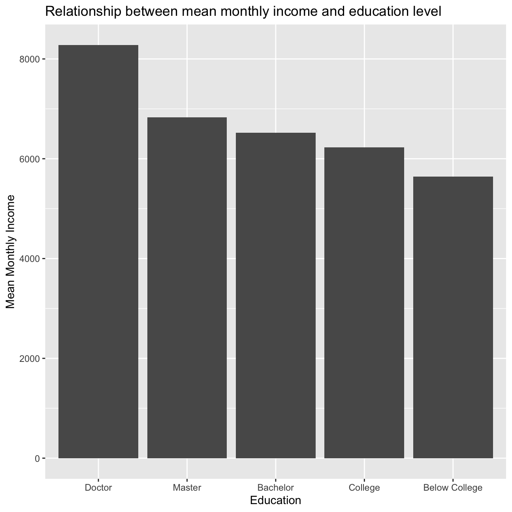

Where Do People Drink The Most Beer, Wine And Spirits?
Back in 2014, fivethiryeight.com published an article on alchohol consumption in different countries. The data drinks is available as part of the fivethirtyeight package. Make sure you have installed the fivethirtyeight package before proceeding.
library(fivethirtyeight)
data(drinks)
# or download directly
alcohol_direct <- read_csv("https://raw.githubusercontent.com/fivethirtyeight/data/master/alcohol-consumption/drinks.csv")
The skim function was useful for understanding the variable types and checking for missing values.
skim(alcohol_direct)
(#tab:glimpse_skim_data)Data summary
| Name |
alcohol_direct |
| Number of rows |
193 |
| Number of columns |
5 |
| _______________________ |
|
| Column type frequency: |
|
| character |
1 |
| numeric |
4 |
| ________________________ |
|
| Group variables |
None |
Variable type: character
Variable type: numeric
| beer_servings |
0 |
1 |
106.16 |
101.14 |
0 |
20.0 |
76.0 |
188.0 |
376.0 |
▇▃▂▂▁ |
| spirit_servings |
0 |
1 |
80.99 |
88.28 |
0 |
4.0 |
56.0 |
128.0 |
438.0 |
▇▃▂▁▁ |
| wine_servings |
0 |
1 |
49.45 |
79.70 |
0 |
1.0 |
8.0 |
59.0 |
370.0 |
▇▁▁▁▁ |
| total_litres_of_pure_alcohol |
0 |
1 |
4.72 |
3.77 |
0 |
1.3 |
4.2 |
7.2 |
14.4 |
▇▃▅▃▁ |
# There are two variable types, numeric and character. The country column is a character type and the other four column (beer, wine, spirit, and total) are numeric.
# No missing values to worry about.
Plot that shows the top 25 beer consuming countries
top_25_beer <- glimpse(alcohol_direct) %>%
arrange(desc(beer_servings)) %>%
slice(1:25)
## Rows: 193
## Columns: 5
## $ country <chr> "Afghanistan", "Albania", "Algeria", "An…
## $ beer_servings <dbl> 0, 89, 25, 245, 217, 102, 193, 21, 261, …
## $ spirit_servings <dbl> 0, 132, 0, 138, 57, 128, 25, 179, 72, 75…
## $ wine_servings <dbl> 0, 54, 14, 312, 45, 45, 221, 11, 212, 19…
## $ total_litres_of_pure_alcohol <dbl> 0.0, 4.9, 0.7, 12.4, 5.9, 4.9, 8.3, 3.8,…
ggplot(top_25_beer, aes(x =fct_reorder(country,beer_servings),y=beer_servings))+
geom_col()+
geom_smooth(se= FALSE)+
theme(plot.title = element_text(vjust = 1, size = 5),axis.text.x = element_text(angle = 90))+
labs(title = "Top 25 Beer Consuming Countries", x= "Countries", y= "Beer Servings" )+
NULL

Plot that shows the top 25 wine consuming countries
top_25_wine <- glimpse(alcohol_direct) %>%
arrange(desc(wine_servings)) %>%
slice(1:25)
## Rows: 193
## Columns: 5
## $ country <chr> "Afghanistan", "Albania", "Algeria", "An…
## $ beer_servings <dbl> 0, 89, 25, 245, 217, 102, 193, 21, 261, …
## $ spirit_servings <dbl> 0, 132, 0, 138, 57, 128, 25, 179, 72, 75…
## $ wine_servings <dbl> 0, 54, 14, 312, 45, 45, 221, 11, 212, 19…
## $ total_litres_of_pure_alcohol <dbl> 0.0, 4.9, 0.7, 12.4, 5.9, 4.9, 8.3, 3.8,…
ggplot(top_25_wine, aes(x =fct_reorder(country,wine_servings),y=wine_servings))+
geom_col()+
geom_smooth(se= FALSE)+
theme(plot.title = element_text(vjust = 1, size = 5),axis.text.x = element_text(angle = 90))+
labs(title = "Top 25 Wine Consuming Countries", x= "Countries", y= "Wine Servings" )+
NULL
Plot that shows the top 25 spirit consuming countries
top_25_spirit <- glimpse(alcohol_direct) %>%
arrange(desc(spirit_servings)) %>%
slice(1:25)
## Rows: 193
## Columns: 5
## $ country <chr> "Afghanistan", "Albania", "Algeria", "An…
## $ beer_servings <dbl> 0, 89, 25, 245, 217, 102, 193, 21, 261, …
## $ spirit_servings <dbl> 0, 132, 0, 138, 57, 128, 25, 179, 72, 75…
## $ wine_servings <dbl> 0, 54, 14, 312, 45, 45, 221, 11, 212, 19…
## $ total_litres_of_pure_alcohol <dbl> 0.0, 4.9, 0.7, 12.4, 5.9, 4.9, 8.3, 3.8,…
ggplot(top_25_spirit, aes(x =fct_reorder(country,spirit_servings),y=spirit_servings))+
geom_col()+
geom_smooth(se= FALSE)+
theme(plot.title = element_text(vjust = 1, size = 5),axis.text.x = element_text(angle = 90))+
labs(title = "Top 25 Spirit Consuming Countries", x= "Countries", y= "Spirit Servings" )+
NULL
The graphs depict that, on average, Namibians consumer the most beer, the French consume the most wine, and Grenadians consume the most spirits. These results may be a consequence of availability of particular ingredients (sugarcane,hops, barley, grapes), implications of specific climates, or cultural influences. Other countries have increasingly stringent or relaxed regulations on the different types of alcohol which alter the consumption habits of consumers.
Analysis of movies- IMDB dataset
We will look at a subset sample of movies, taken from the Kaggle IMDB 5000 movie dataset
This loads the dataset movies.
movies <- read_csv("movies.csv")
glimpse(movies)
## Rows: 2,961
## Columns: 11
## $ title <chr> "Avatar", "Titanic", "Jurassic World", "The Aveng…
## $ genre <chr> "Action", "Drama", "Action", "Action", "Action", …
## $ director <chr> "James Cameron", "James Cameron", "Colin Trevorro…
## $ year <dbl> 2009, 1997, 2015, 2012, 2008, 1999, 1977, 2015, 2…
## $ duration <dbl> 178, 194, 124, 173, 152, 136, 125, 141, 164, 93, …
## $ gross <dbl> 7.61e+08, 6.59e+08, 6.52e+08, 6.23e+08, 5.33e+08,…
## $ budget <dbl> 2.37e+08, 2.00e+08, 1.50e+08, 2.20e+08, 1.85e+08,…
## $ cast_facebook_likes <dbl> 4834, 45223, 8458, 87697, 57802, 37723, 13485, 92…
## $ votes <dbl> 886204, 793059, 418214, 995415, 1676169, 534658, …
## $ reviews <dbl> 3777, 2843, 1934, 2425, 5312, 3917, 1752, 1752, 3…
## $ rating <dbl> 7.9, 7.7, 7.0, 8.1, 9.0, 6.5, 8.7, 7.5, 8.5, 7.2,…
Skim was used to check for missing value, of which there were no missing values. However, there are duplicate values for the three character type columns.
skim(movies)
(#tab:skim_values)Data summary
| Name |
movies |
| Number of rows |
2961 |
| Number of columns |
11 |
| _______________________ |
|
| Column type frequency: |
|
| character |
3 |
| numeric |
8 |
| ________________________ |
|
| Group variables |
None |
Variable type: character
| title |
0 |
1 |
1 |
83 |
0 |
2907 |
0 |
| genre |
0 |
1 |
5 |
11 |
0 |
17 |
0 |
| director |
0 |
1 |
3 |
32 |
0 |
1366 |
0 |
Variable type: numeric
| year |
0 |
1 |
2.00e+03 |
9.95e+00 |
1920.0 |
2.00e+03 |
2.00e+03 |
2.01e+03 |
2.02e+03 |
▁▁▁▂▇ |
| duration |
0 |
1 |
1.10e+02 |
2.22e+01 |
37.0 |
9.50e+01 |
1.06e+02 |
1.19e+02 |
3.30e+02 |
▃▇▁▁▁ |
| gross |
0 |
1 |
5.81e+07 |
7.25e+07 |
703.0 |
1.23e+07 |
3.47e+07 |
7.56e+07 |
7.61e+08 |
▇▁▁▁▁ |
| budget |
0 |
1 |
4.06e+07 |
4.37e+07 |
218.0 |
1.10e+07 |
2.60e+07 |
5.50e+07 |
3.00e+08 |
▇▂▁▁▁ |
| cast_facebook_likes |
0 |
1 |
1.24e+04 |
2.05e+04 |
0.0 |
2.24e+03 |
4.60e+03 |
1.69e+04 |
6.57e+05 |
▇▁▁▁▁ |
| votes |
0 |
1 |
1.09e+05 |
1.58e+05 |
5.0 |
1.99e+04 |
5.57e+04 |
1.33e+05 |
1.69e+06 |
▇▁▁▁▁ |
| reviews |
0 |
1 |
5.03e+02 |
4.94e+02 |
2.0 |
1.99e+02 |
3.64e+02 |
6.31e+02 |
5.31e+03 |
▇▁▁▁▁ |
| rating |
0 |
1 |
6.39e+00 |
1.05e+00 |
1.6 |
5.80e+00 |
6.50e+00 |
7.10e+00 |
9.30e+00 |
▁▁▆▇▁ |
This is used for displaying a series of tables concerning movies.
# Table with the count of movies by genre, ranked in descending order
movies %>%
group_by(genre) %>%
count(sort = TRUE)
## # A tibble: 17 x 2
## # Groups: genre [17]
## genre n
## <chr> <int>
## 1 Comedy 848
## 2 Action 738
## 3 Drama 498
## 4 Adventure 288
## 5 Crime 202
## 6 Biography 135
## 7 Horror 131
## 8 Animation 35
## 9 Fantasy 28
## 10 Documentary 25
## 11 Mystery 16
## 12 Sci-Fi 7
## 13 Family 3
## 14 Musical 2
## 15 Romance 2
## 16 Western 2
## 17 Thriller 1
# Table with the average gross earning and budget (`gross` and `budget`) by genre
movies %>%
group_by(genre) %>%
summarize(mean_budget = mean(budget), mean_gross_earning = mean(gross), return_on_budget = mean_gross_earning/mean_budget) %>%
arrange(desc(return_on_budget))
## # A tibble: 17 x 4
## genre mean_budget mean_gross_earning return_on_budget
## <chr> <dbl> <dbl> <dbl>
## 1 Musical 3189500 92084000 28.9
## 2 Family 14833333. 149160478. 10.1
## 3 Western 3465000 20821884 6.01
## 4 Documentary 5887852. 17353973. 2.95
## 5 Horror 13504916. 37713738. 2.79
## 6 Fantasy 17582143. 42408841. 2.41
## 7 Comedy 24446319. 42630552. 1.74
## 8 Mystery 39218750 67533021. 1.72
## 9 Animation 61701429. 98433792. 1.60
## 10 Biography 28543696. 45201805. 1.58
## 11 Adventure 66290069. 95794257. 1.45
## 12 Drama 26242933. 37465371. 1.43
## 13 Crime 26596169. 37502397. 1.41
## 14 Romance 25107500 31264848. 1.25
## 15 Action 71354888. 86583860. 1.21
## 16 Sci-Fi 27607143. 29788371. 1.08
## 17 Thriller 300000 2468 0.00823
# Table that shows the top 15 directors who have created the highest gross revenue in the box office
top_15_directors <- movies %>%
group_by(director) %>%
summarize(mean_director = mean(gross), standard_dev = sd(gross), median = median(gross), total = sum(gross)) %>%
arrange(desc(total)) %>%
slice(1:15)
top_15_directors
## # A tibble: 15 x 5
## director mean_director standard_dev median total
## <chr> <dbl> <dbl> <dbl> <dbl>
## 1 Steven Spielberg 174524422. 101421051. 164435221 4014061704
## 2 Michael Bay 171634041. 127161579. 138396624 2231242537
## 3 Tim Burton 129454718. 108726924. 76519172 2071275480
## 4 Sam Raimi 201460090. 162126632. 234903076 2014600898
## 5 James Cameron 318287652. 309171337. 175562880. 1909725910
## 6 Christopher Nolan 226653447 187224133. 196667606. 1813227576
## 7 George Lucas 348283696 146193880. 380262555 1741418480
## 8 Robert Zemeckis 124562239. 91300279. 100853835 1619309108
## 9 Clint Eastwood 72543216. 75487408. 46700000 1378321100
## 10 Francis Lawrence 271700394. 135437020. 281666058 1358501971
## 11 Ron Howard 111332341 81933761. 101587923 1335988092
## 12 Gore Verbinski 189942999. 154473822. 123207194 1329600995
## 13 Andrew Adamson 284361730 120895765. 279680930. 1137446920
## 14 Shawn Levy 102704635. 65484773. 85463309 1129750988
## 15 Ridley Scott 80632686. 68812285. 47775715 1128857598
# Table that describes how ratings are distributed by genre.
rating <- movies %>%
group_by(genre) %>%
summarize(min = min(rating), max = max(rating), median = median(rating), standard_dev = sd(rating))
ggplot(movies, aes(x = rating))+
geom_density()+
labs(title = "Ratings Density", colour = rating)

We have placed “gross” on the y-axis and “cast_facebook_likes” on the x-axis. The amount of Facebook likes the cast has received is likely not the strongest indicator of high gross revenues.
ggplot(movies, aes(x = cast_facebook_likes, y= gross))+
geom_point()+
scale_x_log10()+
scale_y_log10()

The correlation between gross revenues and budget seems to be stronger than the previous correlation with Facebook likes.
ggplot(movies, aes(x = gross, y= budget))+
geom_point()+
scale_x_log10()+
scale_y_log10()
There seems to be a small relationship between gross revenue and rating when faceted by genre. Depending on the genre the correlation slightly changes, or there isn’t enough data in particular genres to make a determination.
ggplot(movies, aes(x = gross, y= rating))+
geom_point()+
facet_wrap(vars(genre))+
scale_x_log10()+
scale_y_log10()

Returns of financial stocks
nyse <- read_csv("nyse.csv")
Table and a bar plot that shows the number of companies per sector, in descending order
chart_sector <- nyse %>%
group_by (sector) %>%
summarise(number_of_companies = n()) %>%
arrange(desc(number_of_companies))
ggplot (chart_sector, aes( x = fct_reorder(sector, -number_of_companies), y = number_of_companies))+
geom_col()+
labs(title = "Companies Per Sector", x= "Sector", y= "Number Per Sector" )+
theme(axis.text.x = element_text(angle = 90))
Gathers the tickers from Wikipedia
djia_url <- "https://en.wikipedia.org/wiki/Dow_Jones_Industrial_Average"
#get tables that exist on URL
tables <- djia_url %>%
read_html() %>%
html_nodes(css="table")
# parse HTML tables into a dataframe called djia.
# Use purr::map() to create a list of all tables in URL
djia <- map(tables, . %>%
html_table(fill=TRUE)%>%
clean_names())
# constituents
table1 <- djia[[2]] %>% # the second table on the page contains the ticker symbols
mutate(date_added = ymd(date_added),
# if a stock is listed on NYSE, its symbol is, e.g., NYSE: MMM
# We will get prices from yahoo finance which requires just the ticker
# if symbol contains "NYSE*", the * being a wildcard
# then we jsut drop the first 6 characters in that string
ticker = ifelse(str_detect(symbol, "NYSE*"),
str_sub(symbol,7,11),
symbol)
)
# we need a vector of strings with just the 30 tickers + SPY
tickers <- table1 %>%
select(ticker) %>%
pull() %>% # pull() gets them as a sting of characters
c("SPY") # and lets us add SPY, the SP500 ETF
Price data on stocks
# Notice the cache=TRUE argument in the chunk options. Because getting data is time consuming, # cache=TRUE means that once it downloads data, the chunk will not run again next time you knit your Rmd
myStocks <- tickers %>%
tq_get(get = "stock.prices",
from = "2000-01-01",
to = "2020-08-31") %>%
group_by(symbol)
glimpse(myStocks) # examine the structure of the resulting data frame
## Rows: 153,121
## Columns: 8
## Groups: symbol [31]
## $ symbol <chr> "MMM", "MMM", "MMM", "MMM", "MMM", "MMM", "MMM", "MMM", "MMM…
## $ date <date> 2000-01-03, 2000-01-04, 2000-01-05, 2000-01-06, 2000-01-07,…
## $ open <dbl> 48.0, 46.4, 45.6, 47.2, 50.6, 50.2, 50.4, 51.0, 50.7, 50.4, …
## $ high <dbl> 48.2, 47.4, 48.1, 51.2, 51.9, 51.8, 51.2, 51.8, 50.9, 50.5, …
## $ low <dbl> 47.0, 45.3, 45.6, 47.2, 50.0, 50.0, 50.2, 50.4, 50.2, 49.5, …
## $ close <dbl> 47.2, 45.3, 46.6, 50.4, 51.4, 51.1, 50.2, 50.4, 50.4, 49.7, …
## $ volume <dbl> 2173400, 2713800, 3699400, 5975800, 4101200, 3863800, 235760…
## $ adjusted <dbl> 28.1, 26.9, 27.7, 30.0, 30.5, 30.4, 29.9, 30.0, 30.0, 29.5, …
Calculation of different return periods
#calculate daily returns
myStocks_returns_daily <- myStocks %>%
tq_transmute(select = adjusted,
mutate_fun = periodReturn,
period = "daily",
type = "log",
col_rename = "daily_returns",
cols = c(nested.col))
#calculate monthly returns
myStocks_returns_monthly <- myStocks %>%
tq_transmute(select = adjusted,
mutate_fun = periodReturn,
period = "monthly",
type = "arithmetic",
col_rename = "monthly_returns",
cols = c(nested.col))
#calculate yearly returns
myStocks_returns_annual <- myStocks %>%
group_by(symbol) %>%
tq_transmute(select = adjusted,
mutate_fun = periodReturn,
period = "yearly",
type = "arithmetic",
col_rename = "yearly_returns",
cols = c(nested.col))
Summarized monthly returns since 2017-01-01 for each of the stocks and SPY; min, max, median, mean, SD.
summarise_monthly_returns <- myStocks_returns_monthly %>%
dplyr::group_by(symbol) %>%
dplyr::filter(date >= as.Date("2017-01-01")) %>%
summarise(min_return = min(monthly_returns), max_return = max(monthly_returns), median_return = median(monthly_returns), mean_return = mean(monthly_returns), std_return = sd(monthly_returns))
summarise_monthly_returns
## # A tibble: 31 x 6
## symbol min_return max_return median_return mean_return std_return
## <chr> <dbl> <dbl> <dbl> <dbl> <dbl>
## 1 AAPL -0.181 0.200 0.0513 0.0387 0.0873
## 2 AMGN -0.104 0.180 0.0235 0.0171 0.0664
## 3 AXP -0.221 0.0988 0.0150 0.0109 0.0639
## 4 BA -0.458 0.257 0.0250 0.0124 0.120
## 5 CAT -0.199 0.138 0.0318 0.0151 0.0742
## 6 CRM -0.155 0.391 0.0403 0.0350 0.0850
## 7 CSCO -0.155 0.130 0.0185 0.0125 0.0673
## 8 CVX -0.224 0.270 0.00173 -0.000926 0.0748
## 9 DIS -0.179 0.234 -0.00208 0.00967 0.0750
## 10 DOW -0.276 0.255 0.0456 0.00898 0.128
## # … with 21 more rows
Density plot, using geom_density(), for each of the stocks
ggplot(myStocks_returns_monthly, aes( x = monthly_returns)) +
geom_density() +
facet_wrap(~symbol) +
labs(title = "Density plot of the distribution of monthly returns",
y = "Density", x = "Monthly Returns") +
theme(plot.title = element_text(hjust = 0.5, size = 12, face = "bold"))

We can infer from the plot that the “SPY” is the lest risky since the monthly return distribution is the most narrow, whereas the “DOW” has the widest distribution making it the most risky.
Plot that shows the expected monthly return (mean) of a stock on the Y axis and the risk (standard deviation) in the X-axis.
myStocks_returns_monthly %>%
group_by(symbol) %>%
summarise(mean=mean(monthly_returns),sd=sd(monthly_returns)) %>%
ggplot(aes(x=sd,y=mean,label=symbol)) +
geom_point() +
geom_smooth() +
ggrepel::geom_text_repel(show.legend = FALSE,size = 5) +
labs(title = "Expected Monthly Returns vs Risk ",
y = "Expected monthly returns",
x = "Risk") +
theme(plot.title = element_text(hjust = 0.5, size = 10, face = "bold"))

From this plot we can say that usually when the risk is low the expected monthly return is also low (e.g. SPY, JNJ) and vice versa (e.g. AAPL, CRM). However, DOW is risky but the expected monthly return is not very high. On the other hand, V, UNH and NKE have high expected return compared to their risk profile.
On your own: IBM HR Analytics
For this task, you will analyse a data set on Human Resoruce Analytics. The IBM HR Analytics Employee Attrition & Performance data set is a fictional data set created by IBM data scientists. Among other things, the data set includes employees’ income, their distance from work, their position in the company, their level of education, etc. A full description can be found on the website.
hr_dataset <- read_csv("datasets_1067_1925_WA_Fn-UseC_-HR-Employee-Attrition.csv")
glimpse(hr_dataset)
## Rows: 1,470
## Columns: 35
## $ Age <dbl> 41, 49, 37, 33, 27, 32, 59, 30, 38, 36, 35, …
## $ Attrition <chr> "Yes", "No", "Yes", "No", "No", "No", "No", …
## $ BusinessTravel <chr> "Travel_Rarely", "Travel_Frequently", "Trave…
## $ DailyRate <dbl> 1102, 279, 1373, 1392, 591, 1005, 1324, 1358…
## $ Department <chr> "Sales", "Research & Development", "Research…
## $ DistanceFromHome <dbl> 1, 8, 2, 3, 2, 2, 3, 24, 23, 27, 16, 15, 26,…
## $ Education <dbl> 2, 1, 2, 4, 1, 2, 3, 1, 3, 3, 3, 2, 1, 2, 3,…
## $ EducationField <chr> "Life Sciences", "Life Sciences", "Other", "…
## $ EmployeeCount <dbl> 1, 1, 1, 1, 1, 1, 1, 1, 1, 1, 1, 1, 1, 1, 1,…
## $ EmployeeNumber <dbl> 1, 2, 4, 5, 7, 8, 10, 11, 12, 13, 14, 15, 16…
## $ EnvironmentSatisfaction <dbl> 2, 3, 4, 4, 1, 4, 3, 4, 4, 3, 1, 4, 1, 2, 3,…
## $ Gender <chr> "Female", "Male", "Male", "Female", "Male", …
## $ HourlyRate <dbl> 94, 61, 92, 56, 40, 79, 81, 67, 44, 94, 84, …
## $ JobInvolvement <dbl> 3, 2, 2, 3, 3, 3, 4, 3, 2, 3, 4, 2, 3, 3, 2,…
## $ JobLevel <dbl> 2, 2, 1, 1, 1, 1, 1, 1, 3, 2, 1, 2, 1, 1, 1,…
## $ JobRole <chr> "Sales Executive", "Research Scientist", "La…
## $ JobSatisfaction <dbl> 4, 2, 3, 3, 2, 4, 1, 3, 3, 3, 2, 3, 3, 4, 3,…
## $ MaritalStatus <chr> "Single", "Married", "Single", "Married", "M…
## $ MonthlyIncome <dbl> 5993, 5130, 2090, 2909, 3468, 3068, 2670, 26…
## $ MonthlyRate <dbl> 19479, 24907, 2396, 23159, 16632, 11864, 996…
## $ NumCompaniesWorked <dbl> 8, 1, 6, 1, 9, 0, 4, 1, 0, 6, 0, 0, 1, 0, 5,…
## $ Over18 <chr> "Y", "Y", "Y", "Y", "Y", "Y", "Y", "Y", "Y",…
## $ OverTime <chr> "Yes", "No", "Yes", "Yes", "No", "No", "Yes"…
## $ PercentSalaryHike <dbl> 11, 23, 15, 11, 12, 13, 20, 22, 21, 13, 13, …
## $ PerformanceRating <dbl> 3, 4, 3, 3, 3, 3, 4, 4, 4, 3, 3, 3, 3, 3, 3,…
## $ RelationshipSatisfaction <dbl> 1, 4, 2, 3, 4, 3, 1, 2, 2, 2, 3, 4, 4, 3, 2,…
## $ StandardHours <dbl> 80, 80, 80, 80, 80, 80, 80, 80, 80, 80, 80, …
## $ StockOptionLevel <dbl> 0, 1, 0, 0, 1, 0, 3, 1, 0, 2, 1, 0, 1, 1, 0,…
## $ TotalWorkingYears <dbl> 8, 10, 7, 8, 6, 8, 12, 1, 10, 17, 6, 10, 5, …
## $ TrainingTimesLastYear <dbl> 0, 3, 3, 3, 3, 2, 3, 2, 2, 3, 5, 3, 1, 2, 4,…
## $ WorkLifeBalance <dbl> 1, 3, 3, 3, 3, 2, 2, 3, 3, 2, 3, 3, 2, 3, 3,…
## $ YearsAtCompany <dbl> 6, 10, 0, 8, 2, 7, 1, 1, 9, 7, 5, 9, 5, 2, 4…
## $ YearsInCurrentRole <dbl> 4, 7, 0, 7, 2, 7, 0, 0, 7, 7, 4, 5, 2, 2, 2,…
## $ YearsSinceLastPromotion <dbl> 0, 1, 0, 3, 2, 3, 0, 0, 1, 7, 0, 0, 4, 1, 0,…
## $ YearsWithCurrManager <dbl> 5, 7, 0, 0, 2, 6, 0, 0, 8, 7, 3, 8, 3, 2, 3,…
Clean the data set
hr_cleaned <- hr_dataset %>%
clean_names() %>%
mutate(
education = case_when(
education == 1 ~ "Below College",
education == 2 ~ "College",
education == 3 ~ "Bachelor",
education == 4 ~ "Master",
education == 5 ~ "Doctor"
),
environment_satisfaction = case_when(
environment_satisfaction == 1 ~ "Low",
environment_satisfaction == 2 ~ "Medium",
environment_satisfaction == 3 ~ "High",
environment_satisfaction == 4 ~ "Very High"
),
job_satisfaction = case_when(
job_satisfaction == 1 ~ "Low",
job_satisfaction == 2 ~ "Medium",
job_satisfaction == 3 ~ "High",
job_satisfaction == 4 ~ "Very High"
),
performance_rating = case_when(
performance_rating == 1 ~ "Low",
performance_rating == 2 ~ "Good",
performance_rating == 3 ~ "Excellent",
performance_rating == 4 ~ "Outstanding"
),
work_life_balance = case_when(
work_life_balance == 1 ~ "Bad",
work_life_balance == 2 ~ "Good",
work_life_balance == 3 ~ "Better",
work_life_balance == 4 ~ "Best"
)
) %>%
select(age, attrition, daily_rate, department,
distance_from_home, education,
gender, job_role,environment_satisfaction,
job_satisfaction, marital_status,
monthly_income, num_companies_worked, percent_salary_hike,
performance_rating, total_working_years,
work_life_balance, years_at_company,
years_since_last_promotion)
Summary describing this dataset.
#1. Shows often do people leave the company (`attrition`)
attrition_rate<-hr_cleaned %>%
mutate(people_leave=ifelse(attrition=="Yes",1,0))%>%
summarize(attrition_rate=sum(people_leave)/count(hr_cleaned))
#2. Shows how `age`, `years_at_company`, `monthly_income` and `years_since_last_promotion` distributed. Looking at the summary statistics, we can see "Age" is the variable closer to normal distribution since its mean and median are closer together.
summary(hr_cleaned %>%
select(age,years_at_company,monthly_income,years_since_last_promotion))
## age years_at_company monthly_income years_since_last_promotion
## Min. :18.0 Min. : 0 Min. : 1009 Min. : 0.00
## 1st Qu.:30.0 1st Qu.: 3 1st Qu.: 2911 1st Qu.: 0.00
## Median :36.0 Median : 5 Median : 4919 Median : 1.00
## Mean :36.9 Mean : 7 Mean : 6503 Mean : 2.19
## 3rd Qu.:43.0 3rd Qu.: 9 3rd Qu.: 8379 3rd Qu.: 3.00
## Max. :60.0 Max. :40 Max. :19999 Max. :15.00
#3. Shows how `job_satisfaction` and `work_life_balance` distributed.
hr_cleaned %>%
group_by(job_satisfaction) %>%
summarise(total= n()) %>%
mutate(percentage_of_total = total / sum(total))
## # A tibble: 4 x 3
## job_satisfaction total percentage_of_total
## <chr> <int> <dbl>
## 1 High 442 0.301
## 2 Low 289 0.197
## 3 Medium 280 0.190
## 4 Very High 459 0.312
hr_cleaned %>%
group_by(work_life_balance) %>%
summarise(total= n()) %>%
mutate(percentage_of_total = total / sum(total))
## # A tibble: 4 x 3
## work_life_balance total percentage_of_total
## <chr> <int> <dbl>
## 1 Bad 80 0.0544
## 2 Best 153 0.104
## 3 Better 893 0.607
## 4 Good 344 0.234
#4. Relationship between monthly income and education, as well as monthly income and gender. Individuals with a masters or doctorate have higher incomes than those with other degrees. Females tend to receive slightly higher monthly income.
hr_cleaned %>%
ggplot(aes(x= education , y= monthly_income)) +
geom_boxplot()+
labs(title = "Relationship between monthly income and education",subtitle ="People with higher education tend to receive higher monthly income",x = "Education",y = "Monthly Income")

hr_cleaned %>%
ggplot(aes(x= gender , y= monthly_income)) +
geom_boxplot()+
labs(title = "Relationship between monthly income and gender",subtitle ="Female tend to recive slightly higher monthly income",
x = "Education",
y = "Monthly Income")

#5. Boxplot of income vs job role, in descending order.
hr_cleaned %>%
ggplot(aes(x= reorder(job_role,-monthly_income) , y=monthly_income )) +
geom_boxplot()+
theme(axis.text.x=element_text(angle =90))+
labs(title = "Relationship between monthly income and job role",
y = "Monthly Income",
x = "Job role")

#6. Bar chart of the mean (or median?) income by education level.
mean_income <- hr_cleaned %>%
group_by(education) %>%
summarise(mean_income=mean(monthly_income))
ggplot(mean_income, aes(x=reorder(education,-mean_income),y=mean_income))+
geom_col()+
labs(title = "Relationship between mean monthly income and education level",
y = "Mean Monthly Income",
x = "Education")

median_income <- hr_cleaned %>%
group_by(education) %>%
summarise(median_income=median(monthly_income))
ggplot(median_income, aes(x=reorder(education,-median_income),y=median_income))+
geom_col()+
labs(title = "Relationship between median monthly income and education level",
y = "Median Monthly Income",
x = "Education")
#7. The distribution of income by education level.
ggplot(hr_cleaned, aes(x=monthly_income))+
geom_density()+
facet_wrap(vars(education))+
labs(title = "Distribution of monthly income by education level ",
x= "Monthly Income",
y="Density")
#8. Plot of income vs age, faceted by `job_role`
ggplot(hr_cleaned, aes(x=age,y=monthly_income))+
geom_point()+
facet_wrap(vars(job_role))+
labs(title = "Relationship between monthly income and age by job role ",
x= "Age",
y="Monthly Income")+scale_x_log10()+
scale_y_log10()

Challenge 1: Replicating a chart
Figure 3 shows the homicide and suicide rate among white men.

Creating a replication of figure 3 (homicide and suicide rate among white men).
## ST State Population.Black Population.White Deaths.homicide.Black
## 1 AK Alaska 153664 2274605 23
## 2 AK Alaska 153664 2274605 NA
## 3 AL Alabama 5376635 14267619 183
## 4 AL Alabama 5376635 14267619 1812
## 5 AR Arkansas 1991165 9747025 667
## 6 AR Arkansas 1991165 9747025 90
## Deaths.homicide.White crude.homicide.Black crude.homicide.White
## 1 78 14.97 3.43
## 2 10 NA NA
## 3 124 3.40 0.87
## 4 620 33.70 4.35
## 5 416 33.50 4.27
## 6 110 4.52 1.13
## adjusted.homicide.Black adjusted.homicide.White Deaths.suicide.Black
## 1 12.30 3.24 23
## 2 NA NA 12
## 3 3.51 0.85 148
## 4 33.00 4.47 370
## 5 33.39 4.39 118
## 6 4.81 1.13 75
## Deaths.suicide.White crude.suicide.Black crude.suicide.White
## 1 535 14.97 23.52
## 2 196 NA 8.62
## 3 1222 2.75 8.56
## 4 3195 6.88 22.39
## 5 2154 5.93 22.10
## 6 1027 3.77 10.54
## adjusted.suicide.Black adjusted.suicide.White type crude.RD.suicide
## 1 12.77 23.47 Firearm -8.55
## 2 NA 8.21 Non-Firearm NA
## 3 2.84 8.64 Non-Firearm -5.81
## 4 7.20 20.97 Firearm -15.51
## 5 6.25 20.98 Firearm -16.17
## 6 3.93 10.89 Non-Firearm -6.77
## adj.RD.suicide crude.RD.homicide adj.RD.homicide ST.order.RD.homicide
## 1 -10.70 11.54 9.06 AK
## 2 NA NA NA AK
## 3 -5.80 2.53 2.66 AL
## 4 -13.77 29.35 28.53 AL
## 5 -14.73 29.23 29.00 AR
## 6 -6.96 3.39 3.68 AR
## ST.order.RD.suicide gun.house.prev gun.house.prev.category average.pop.white
## 1 AK 59.8 45.0%-65.5% 252734
## 2 AK 59.8 45.0%-65.5% 252734
## 3 AL 52.2 45.0%-65.5% 1585291
## 4 AL 52.2 45.0%-65.5% 1585291
## 5 AR 58.8 45.0%-65.5% 1083003
## 6 AR 58.8 45.0%-65.5% 1083003
## average.pop.black type.fac
## 1 17074 Firearm-related
## 2 17074 Firearm-unrelated
## 3 597404 Firearm-unrelated
## 4 597404 Firearm-related
## 5 221241 Firearm-related
## 6 221241 Firearm-unrelated
## Rows: 104
## Columns: 28
## $ ST <chr> "AK", "AK", "AL", "AL", "AR", "AR", "AZ", "AZ…
## $ State <chr> "Alaska", "Alaska", "Alabama", "Alabama", "Ar…
## $ Population.Black <int> 153664, 153664, 5376635, 5376635, 1991165, 19…
## $ Population.White <int> 2274605, 2274605, 14267619, 14267619, 9747025…
## $ Deaths.homicide.Black <int> 23, NA, 183, 1812, 667, 90, 300, 40, 3712, 43…
## $ Deaths.homicide.White <int> 78, 10, 124, 620, 416, 110, 586, 145, 1399, 6…
## $ crude.homicide.Black <dbl> 14.97, NA, 3.40, 33.70, 33.50, 4.52, 22.06, 2…
## $ crude.homicide.White <dbl> 3.43, NA, 0.87, 4.35, 4.27, 1.13, 3.46, 0.86,…
## $ adjusted.homicide.Black <dbl> 12.30, NA, 3.51, 33.00, 33.39, 4.81, 20.40, 2…
## $ adjusted.homicide.White <dbl> 3.24, NA, 0.85, 4.47, 4.39, 1.13, 3.63, 0.91,…
## $ Deaths.suicide.Black <int> 23, 12, 148, 370, 118, 75, 101, 80, 492, 639,…
## $ Deaths.suicide.White <int> 535, 196, 1222, 3195, 2154, 1027, 4146, 1972,…
## $ crude.suicide.Black <dbl> 14.97, NA, 2.75, 6.88, 5.93, 3.77, 7.43, 5.88…
## $ crude.suicide.White <dbl> 23.52, 8.62, 8.56, 22.39, 22.10, 10.54, 24.47…
## $ adjusted.suicide.Black <dbl> 12.77, NA, 2.84, 7.20, 6.25, 3.93, 7.51, 5.58…
## $ adjusted.suicide.White <dbl> 23.47, 8.21, 8.64, 20.97, 20.98, 10.89, 21.42…
## $ type <chr> "Firearm", "Non-Firearm", "Non-Firearm", "Fir…
## $ crude.RD.suicide <dbl> -8.55, NA, -5.81, -15.51, -16.17, -6.77, -17.…
## $ adj.RD.suicide <dbl> -10.70, NA, -5.80, -13.77, -14.73, -6.96, -13…
## $ crude.RD.homicide <dbl> 11.54, NA, 2.53, 29.35, 29.23, 3.39, 18.60, 2…
## $ adj.RD.homicide <dbl> 9.06, NA, 2.66, 28.53, 29.00, 3.68, 16.77, 1.…
## $ ST.order.RD.homicide <chr> "AK", "AK", "AL", "AL", "AR", "AR", "AZ", "AZ…
## $ ST.order.RD.suicide <chr> "AK", "AK", "AL", "AL", "AR", "AR", "AZ", "AZ…
## $ gun.house.prev <dbl> 59.8, 59.8, 52.2, 52.2, 58.8, 58.8, 32.3, 32.…
## $ gun.house.prev.category <chr> "45.0%-65.5%", "45.0%-65.5%", "45.0%-65.5%", …
## $ average.pop.white <dbl> 252734, 252734, 1585291, 1585291, 1083003, 10…
## $ average.pop.black <dbl> 17074, 17074, 597404, 597404, 221241, 221241,…
## $ type.fac <chr> "Firearm-related", "Firearm-unrelated", "Fire…
## Rows: 49
## Columns: 5
## $ ST <chr> "AK", "AL", "AR", "AZ", "CA", "CO", "CT", "DE…
## $ adjusted.suicide.White <dbl> 23.47, 20.97, 20.98, 21.42, 11.63, 19.48, 6.4…
## $ adjusted.homicide.White <dbl> 3.24, 4.47, 4.39, 3.63, 2.05, 1.75, 0.86, 1.7…
## $ gun.house.prev.category <chr> "45.0%-65.5%", "45.0%-65.5%", "45.0%-65.5%", …
## $ average.pop.white <dbl> 252734, 1585291, 1083003, 1882345, 7703022, 1…
Details
- Who did you collaborate with: Group 12: Chushi Guo, Erkka Salo, Joshua Nemy, Julien Vermeersch, Marta Maccagno, and Raymond Zexin Wu
Climate change and temperature anomalies
If we wanted to study climate change, we can find data on the Combined Land-Surface Air and Sea-Surface Water Temperature Anomalies in the Northern Hemisphere at NASA’s Goddard Institute for Space Studies. The tabular data of temperature anomalies can be found here
To define temperature anomalies you need to have a reference, or base, period which NASA clearly states that it is the period between 1951-1980.
Run the code below to load the file:
weather <-
read_csv("https://data.giss.nasa.gov/gistemp/tabledata_v3/NH.Ts+dSST.csv",
skip = 1,
na = "***")
Notice that, when using this function, we added two options: skip and na.
- The
skip=1 option is there as the real data table only starts in Row 2, so we need to skip one row.
na = "***" option informs R how missing observations in the spreadsheet are coded. When looking at the spreadsheet, you can see that missing data is coded as "***". It is best to specify this here, as otherwise some of the data is not recognized as numeric data.
Once the data is loaded, notice that there is a object titled weather in the Environment panel. If you cannot see the panel (usually on the top-right), go to Tools > Global Options > Pane Layout and tick the checkbox next to Environment. Click on the weather object, and the dataframe will pop up on a seperate tab. Inspect the dataframe.
For each month and year, the dataframe shows the deviation of temperature from the normal (expected). Further the dataframe is in wide format.
You have two objectives in this section:
Select the year and the twelve month variables from the weather dataset. We do not need the others (J-D, D-N, DJF, etc.) for this assignment. Hint: use select() function.
Convert the dataframe from wide to ‘long’ format. Hint: use gather() or pivot_longer() function. Name the new dataframe as tidyweather, name the variable containing the name of the month as month, and the temperature deviation values as delta.
tidyweather <- weather %>%
select(Year:Dec) %>%
pivot_longer(cols=2:13, names_to="Month", values_to="delta")
Inspect your dataframe. It should have three variables now, one each for
- year,
- month, and
- delta, or temperature deviation.
Plotting Information
Let us plot the data using a time-series scatter plot, and add a trendline. To do that, we first need to create a new variable called date in order to ensure that the delta values are plot chronologically.
In the following chunk of code, I used the eval=FALSE argument, which does not run a chunk of code; I did so that you can knit the document before tidying the data and creating a new dataframe tidyweather. When you actually want to run this code and knit your document, you must delete eval=FALSE, not just here but in all chunks were eval=FALSE appears.
tidyweather <- tidyweather %>%
mutate(date = ymd(paste(as.character(Year), Month, "1")),
month = month(date, label=TRUE),
year = year(date))
ggplot(tidyweather, aes(x=date, y = delta))+
geom_point()+
geom_smooth(color="red") +
theme_bw() +
labs (
title = "Weather Anomalies"
)

Is the effect of increasing temperature more pronounced in some months? Use facet_wrap() to produce a seperate scatter plot for each month, again with a smoothing line. Your chart should human-readable labels; that is, each month should be labeled “Jan”, “Feb”, “Mar” (full or abbreviated month names are fine), not 1, 2, 3.

It is sometimes useful to group data into different time periods to study historical data. For example, we often refer to decades such as 1970s, 1980s, 1990s etc. to refer to a period of time. NASA calcuialtes a temperature anomaly, as difference form the base periof of 1951-1980. The code below creates a new data frame called comparison that groups data in five time periods: 1881-1920, 1921-1950, 1951-1980, 1981-2010 and 2011-present.
We remove data before 1800 and before using filter. Then, we use the mutate function to create a new variable interval which contains information on which period each observation belongs to. We can assign the different periods using case_when().
comparison <- tidyweather %>%
filter(Year>= 1881) %>% #remove years prior to 1881
#create new variable 'interval', and assign values based on criteria below:
mutate(interval = case_when(
Year %in% c(1881:1920) ~ "1881-1920",
Year %in% c(1921:1950) ~ "1921-1950",
Year %in% c(1951:1980) ~ "1951-1980",
Year %in% c(1981:2010) ~ "1981-2010",
TRUE ~ "2011-present"
))
Inspect the comparison dataframe by clicking on it in the Environment pane.
Now that we have the interval variable, we can create a density plot to study the distribution of monthly deviations (delta), grouped by the different time periods we are interested in. Set fill to interval to group and colour the data by different time periods.
ggplot(comparison, aes(x=delta, fill=interval))+
geom_density(alpha=0.2) + #density plot with tranparency set to 20%
theme_bw() + #theme
labs (
title = "Density Plot for Monthly Temperature Anomalies",
y = "Density" #changing y-axis label to sentence case
)

So far, we have been working with monthly anomalies. However, we might be interested in average annual anomalies. We can do this by using group_by() and summarise(), followed by a scatter plot to display the result.
#creating yearly averages
average_annual_anomaly <- tidyweather %>%
group_by(Year) %>% #grouping data by Year
# creating summaries for mean delta
# use `na.rm=TRUE` to eliminate NA (not available) values
summarise(annual_average_delta = mean(delta, na.rm=TRUE))
#plotting the data:
ggplot(average_annual_anomaly, aes(x=Year, y= annual_average_delta))+
geom_point()+
#Fit the best fit line, using LOESS method
geom_smooth(method="loess") +
#change to theme_bw() to have white background + black frame around plot
theme_bw() +
labs (
title = "Average Yearly Anomaly",
y = "Average Annual Delta"
)

Confidence Interval for delta
NASA points out on their website that
A one-degree global change is significant because it takes a vast amount of heat to warm all the oceans, atmosphere, and land by that much. In the past, a one- to two-degree drop was all it took to plunge the Earth into the Little Ice Age.
Your task is to construct a confidence interval for the average annual delta since 2011, both using a formula and using a bootstrap simulation with the infer package. Recall that the dataframe comparison has already grouped temperature anomalies according to time intervals; we are only interested in what is happening between 2011-present.
formula_ci <- comparison %>%
# choose the interval 2011-present
# what dplyr verb will you use?
filter(interval=="2011-present")%>%
# calculate summary statistics for temperature deviation (delta)
# calculate mean, SD, count, SE, lower/upper 95% CI
# what dplyr verb will you use?
summarize(mean_delta=mean(delta, na.rm=TRUE),
SD_delta=sd(delta, na.rm=TRUE),
count_delta=n(),
se_delta=SD_delta/sqrt(count_delta),
t_critical=qt(0.975,count_delta-1),
Lower_CI=mean_delta-t_critical*se_delta, upper_CI=mean_delta+t_critical*se_delta)
#print out formula_CI
formula_ci
## # A tibble: 1 x 7
## mean_delta SD_delta count_delta se_delta t_critical Lower_CI upper_CI
## <dbl> <dbl> <int> <dbl> <dbl> <dbl> <dbl>
## 1 0.966 0.262 108 0.0252 1.98 0.916 1.02
library(infer)
bootstrap_delta <- comparison %>%
filter(interval=="2011-present") %>%
specify(response = delta) %>%
generate(reps=1000, type="bootstrap") %>%
calculate(stat = "mean")
bootstrap_CI <- bootstrap_delta %>%
get_ci(level=0.95, type = "percentile") #only work with bootstrap
bootstrap_CI
## # A tibble: 1 x 2
## lower_ci upper_ci
## <dbl> <dbl>
## 1 0.918 1.01
What is the data showing us? Please type your answer after (and outside!) this blockquote. You have to explain what you have done, and the interpretation of the result. One paragraph max, please!
We used two methods to calculate the 95% confidence interval of temperature anomalies. Essentially, this confidence interval indicates the range of values for which we are 95% certain that they contain the true ‘population’ mean. The first method uses a student-t distribution to standard deviations and the t-critical values that correspond to the 95% interval. This calculation yielded a lower bound of 0.916 and an upper bound of 1.02, meaning the true mean temperature deviation from 2011 onward is between these values with 95% confidence. The second method uses a bootstrap calculation to find the confidence interval. We set the number of repeats to 1000 and this yielded a confidence interval of 0.914 to 1.02. Overall, the two confidence intervals are very similar and they indicate that temperature anomalies since 2011 have been close to unitary, which is extremely significant according to the NASA website.
General Social Survey (GSS)
The General Social Survey (GSS) gathers data on American society in order to monitor and explain trends in attitudes, behaviours, and attributes. Many trends have been tracked for decades, so one can see the evolution of attitudes, etc in American Society.
In this assignment we analyze data from the 2016 GSS sample data, using it to estimate values of population parameters of interest about US adults. The GSS sample data file has 2867 observations of 935 variables, but we are only interested in very few of these variables and you are using a smaller file.
gss <- read_csv(here::here("data", "smallgss2016.csv"),
na = c("", "Don't know",
"No answer", "Not applicable"))
## Error: '/Users/joshuanemy/Documents/Documents/Josh/Education/Masters/LBS/Courses/Data Analytics For Finance/Website/my_website/data/smallgss2016.csv' does not exist.
You will also notice that many responses should not be taken into consideration, like “No Answer”, “Don’t Know”, “Not applicable”, “Refused to Answer”.
We will be creating 95% confidence intervals for population parameters. The variables we have are the following:
- hours and minutes spent on email weekly. The responses to these questions are recorded in the
emailhr and emailmin variables. For example, if the response is 2.50 hours, this would be recorded as emailhr = 2 and emailmin = 30.
snapchat, instagrm, twitter: whether respondents used these social media in 2016sex: Female - Maledegree: highest education level attained
Instagram and Snapchat, by sex
Can we estimate the population proportion of Snapchat or Instagram users in 2016?
- Create a new variable,
snap_insta that is Yes if the respondent reported using any of Snapchat (snapchat) or Instagram (instagrm), and No if not. If the recorded value was NA for both of these questions, the value in your new variable should also be NA.
#addition of new column that shows who uses either or both platforms, none, or didnt proivde data (Yes, No, NA)
gss <- gss %>%
mutate(snap_insta= ifelse(snapchat=="Yes" | instagrm =="Yes", "Yes", ifelse(snapchat== "NA" & instagrm== "NA", "NA", "No")))
## Error: Problem with `mutate()` input `snap_insta`.
## x object 'snapchat' not found
## ℹ Input `snap_insta` is `ifelse(...)`.
gss
## # A tibble: 500 x 11
## year age sex college partyid hompop hours income class finrela weight
## <dbl> <dbl> <fct> <fct> <fct> <dbl> <dbl> <ord> <fct> <fct> <dbl>
## 1 2014 36 male degree ind 3 50 $2500… midd… below a… 0.896
## 2 1994 34 female no degr… rep 4 31 $2000… work… below a… 1.08
## 3 1998 24 male degree ind 1 40 $2500… work… below a… 0.550
## 4 1996 42 male no degr… ind 4 40 $2500… work… above a… 1.09
## 5 1994 31 male degree rep 2 40 $2500… midd… above a… 1.08
## 6 1996 32 female no degr… rep 4 53 $2500… midd… average 1.09
## 7 1990 48 female no degr… dem 2 32 $2500… work… below a… 1.06
## 8 2016 36 female degree ind 1 20 $2500… midd… above a… 0.478
## 9 2000 30 female degree rep 5 40 $2500… midd… average 1.10
## 10 1998 33 female no degr… dem 2 40 $1500… work… far bel… 0.550
## # … with 490 more rows
- Calculate the proportion of Yes’s for
snap_insta among those who answered the question, i.e. excluding NAs.
# this variable counts all people who sumbitted an answer
sum_users_answer <- sum(gss$snap_insta!= "NA")
#this calculates the proportion of people using platforms (Yes/(Yes+No))
prop_yes_gss <- gss %>%
summarise(prop_yes = (sum(ifelse(snap_insta=="Yes", 1, 0))/sum_users_answer))
## Error: Problem with `summarise()` input `prop_yes`.
## x object 'snap_insta' not found
## ℹ Input `prop_yes` is `(sum(ifelse(snap_insta == "Yes", 1, 0))/sum_users_answer)`.
prop_yes_gss
## Error in eval(expr, envir, enclos): object 'prop_yes_gss' not found
- Using the CI formula for proportions, please construct 95% CIs for men and women who used either Snapchat or Instagram
#women who use either Snapchat or Instagram
#sum for women who use either Snapchat or Instagram
sum_women_snap_insta <- sum(gss$snap_insta != "NA" & gss$sex=="Female")
#proportion of women using platforms (Yes/(Yes+No))
prop_yes_gss_women <- gss %>%
filter (sex=="Female") %>%
summarise(prop_yes = (sum(ifelse(snap_insta=="Yes", 1, 0))/sum_women_snap_insta))
## Error: Problem with `summarise()` input `prop_yes`.
## x object 'snap_insta' not found
## ℹ Input `prop_yes` is `(sum(ifelse(snap_insta == "Yes", 1, 0))/sum_women_snap_insta)`.
#standard erros and the average for women
stan_error_women <- sqrt(prop_yes_gss_women*(1-prop_yes_gss_women)/ (sum_women_snap_insta))
## Error in eval(expr, envir, enclos): object 'prop_yes_gss_women' not found
mean_snap_insta_women <- prop_yes_gss_women
## Error in eval(expr, envir, enclos): object 'prop_yes_gss_women' not found
#CI of 95% for women who use either Snapchat or Instagram
critical_t_value <- qt(0.975, sum_women_snap_insta -1)
lower_CI_women <- mean_snap_insta_women - (critical_t_value*stan_error_women)
## Error in eval(expr, envir, enclos): object 'mean_snap_insta_women' not found
upper_CI_women <- mean_snap_insta_women + (critical_t_value*stan_error_women)
## Error in eval(expr, envir, enclos): object 'mean_snap_insta_women' not found
#men who use either Snapchat or Instagram
#sum for men who use either Snapchat or Instagram
sum_men_snap_insta <- sum(gss$snap_insta != "NA" & gss$sex=="Male")
#proportion of men using platforms (yes/(yes+no))
prop_yes_gss_men <- gss %>%
filter (sex=="Male") %>%
summarise(prop_yes = (sum(ifelse(snap_insta=="Yes", 1, 0))/sum_men_snap_insta))
## Error: Problem with `summarise()` input `prop_yes`.
## x object 'snap_insta' not found
## ℹ Input `prop_yes` is `(sum(ifelse(snap_insta == "Yes", 1, 0))/sum_men_snap_insta)`.
#standard erros and the average for men
stan_error_men <- sqrt(prop_yes_gss_men*(1-prop_yes_gss_men)/ (sum_men_snap_insta))
## Error in eval(expr, envir, enclos): object 'prop_yes_gss_men' not found
mean_snap_insta_men <- prop_yes_gss_men
## Error in eval(expr, envir, enclos): object 'prop_yes_gss_men' not found
#CI of 95% for men who use either Snapchat or Instagram
critical_t_value <- qt(0.975, sum_men_snap_insta -1)
lower_CI_men <- mean_snap_insta_men - (critical_t_value*stan_error_men)
## Error in eval(expr, envir, enclos): object 'mean_snap_insta_men' not found
upper_CI_men <- mean_snap_insta_men + (critical_t_value*stan_error_men)
## Error in eval(expr, envir, enclos): object 'mean_snap_insta_men' not found
#print CI of 95% for women and men
paste("Proportion of women using either Snapchat or Instagram:", prop_yes_gss_women)
## Error in paste("Proportion of women using either Snapchat or Instagram:", : object 'prop_yes_gss_women' not found
paste("CI 95% women:", "[", lower_CI_women, "-", upper_CI_women, "]")
## Error in paste("CI 95% women:", "[", lower_CI_women, "-", upper_CI_women, : object 'lower_CI_women' not found
paste("Proportion of men using either Snapchat or Instagram:", prop_yes_gss_men)
## Error in paste("Proportion of men using either Snapchat or Instagram:", : object 'prop_yes_gss_men' not found
paste("CI 95% men:", "[", lower_CI_men, "-", upper_CI_men, "]")
## Error in paste("CI 95% men:", "[", lower_CI_men, "-", upper_CI_men, "]"): object 'lower_CI_men' not found
Email usage
Can we estimate the population parameter on time spent on email weekly?
- Create a new variable called
email that combines emailhr and emailmin to reports the number of minutes the respondents spend on email weekly.
email <- gss %>%
mutate(emailmin = as.numeric(emailmin), emailhr = as.numeric(emailhr)) %>%
mutate(email = (emailhr * 60) + emailmin)
## Error: Problem with `mutate()` input `emailmin`.
## x object 'emailmin' not found
## ℹ Input `emailmin` is `as.numeric(emailmin)`.
- Visualise the distribution of this new variable. Find the mean and the median number of minutes respondents spend on email weekly. Is the mean or the median a better measure of the typical amoung of time Americans spend on email weekly? Why?
email_user <- email%>%
filter (email != "NA_character_") %>%
summarise(mean_email = mean (email), median_email = median (email))
## Error in eval(lhs, parent, parent): object 'email' not found
The median is a better measure of the typical amount of time Americans spend on email weekly because there are many outliers and thus the mean doesn’t represent a precise value - the standard deviation is high as well as the mean (compared to the median).
- Using the
infer package, calculate a 95% bootstrap confidence interval for the mean amount of time Americans spend on email weekly. Interpret this interval in context of the data, reporting its endpoints in “humanized” units (e.g. instead of 108 minutes, report 1 hr and 8 minutes). If you get a result that seems a bit odd, discuss why you think this might be the case.
library(infer)
boot_email <- email %>%
filter(email != "NA_character_") %>%
# Specify the variable of interest
specify(response = email) %>%
# Generate a bunch of bootstrap samples
generate(reps = 1000, type = "bootstrap") %>%
# Find the mean of each sample
calculate(stat ="mean")
## Error in eval(lhs, parent, parent): object 'email' not found
percentile_ci <- boot_email %>%
get_confidence_interval(level = 0.95, type = "percentile")
## Error in eval(lhs, parent, parent): object 'boot_email' not found
# Report endpoints in "humanized" units (using arithmetic operators %/% and %%)
percentile_ci_new_lower_hour <- percentile_ci$lower_ci%/%60
## Error in eval(expr, envir, enclos): object 'percentile_ci' not found
percentile_ci_new_lower_minute <- percentile_ci$lower_ci%%60
## Error in eval(expr, envir, enclos): object 'percentile_ci' not found
percentile_ci_new_upper_hour <- percentile_ci$upper_ci%/%60
## Error in eval(expr, envir, enclos): object 'percentile_ci' not found
percentile_ci_new_upper_minute <- percentile_ci$upper_ci%%60
## Error in eval(expr, envir, enclos): object 'percentile_ci' not found
paste(percentile_ci_new_lower_hour, "hours and",
format(round(percentile_ci_new_lower_minute),
nsmall = 0) , "minutes")
## Error in paste(percentile_ci_new_lower_hour, "hours and", format(round(percentile_ci_new_lower_minute), : object 'percentile_ci_new_lower_hour' not found
paste(percentile_ci_new_upper_hour, "hours and",
format(round(percentile_ci_new_upper_minute),
nsmall = 0) , "minutes")
## Error in paste(percentile_ci_new_upper_hour, "hours and", format(round(percentile_ci_new_upper_minute), : object 'percentile_ci_new_upper_hour' not found
- Would you expect a 99% confidence interval to be wider or narrower than the interval you calculated above? Explain your reasoning.
We would expect a 99% Confidence Interval to be wider than the interval calculated above, because the margin of error would increase and result in a wider interval. We would then predict the population parameter with 99% confidence.
Trump’s Approval Margins
As we saw in class, fivethirtyeight.com has detailed data on all polls that track the president’s approval
# Import approval polls data
approval_polllist <- read_csv(here::here('data', 'approval_polllist.csv'))
## Error: '/Users/joshuanemy/Documents/Documents/Josh/Education/Masters/LBS/Courses/Data Analytics For Finance/Website/my_website/data/approval_polllist.csv' does not exist.
# or directly off fivethirtyeight website
# approval_polllist <- read_csv('https://projects.fivethirtyeight.com/trump-approval-data/approval_polllist.csv')
glimpse(approval_polllist)
## Error in glimpse(approval_polllist): object 'approval_polllist' not found
# Use `lubridate` to fix dates, as they are given as characters.
library(lubridate)
approval_polllist_cleaned <- approval_polllist %>%
filter(subgroup=="Voters")%>%
mutate(modeldate = mdy(modeldate),
startdate = mdy(startdate),
enddate=mdy(enddate),
createddate=mdy(createddate),
timestamp=parse_date_time(timestamp, orders="HMSdmy")
)
## Error in eval(lhs, parent, parent): object 'approval_polllist' not found
glimpse(approval_polllist_cleaned)
## Error in glimpse(approval_polllist_cleaned): object 'approval_polllist_cleaned' not found
Create a plot
What I would like you to do is to calculate the average net approval rate (approve- disapprove) for each week since he got into office. I want you plot the net approval, along with its 95% confidence interval. There are various dates given for each poll, please use enddate, i.e., the date the poll ended.
trump_net_approval <- approval_polllist_cleaned %>%
mutate (net_approval_rate = (approve - disapprove),
end_week = isoweek(enddate), year =year(enddate)) %>%
group_by(year, end_week) %>%
summarize(mean_net = mean(net_approval_rate)) %>%
ungroup()
## Error in eval(lhs, parent, parent): object 'approval_polllist_cleaned' not found
trump_net_approval_CI<- approval_polllist_cleaned %>%
mutate (net_approval_rate = (approve - disapprove),
end_week = isoweek(enddate), year =year(enddate)) %>%
group_by(year, end_week) %>%
summarize(mean_net = mean(net_approval_rate),
std_trump = sd(net_approval_rate),
count_endweek=n(),
st_error_trump = std_trump/sqrt(count_endweek),
t_critical = qt(0.975, count_endweek-1),
lower_CI = mean_net - t_critical*st_error_trump,
upper_CI = mean_net + t_critical*st_error_trump)
## Error in eval(lhs, parent, parent): object 'approval_polllist_cleaned' not found
ggplot(trump_net_approval_CI, aes(x=end_week, y=mean_net, color=as.factor(year))) +
facet_wrap(vars(year)) +
geom_linerange(aes(ymax = upper_CI , ymin = lower_CI), size=0) +
geom_point(size=0.75) +
geom_hline(yintercept=0, linetype="solid", color = "orange") +
geom_line(aes(y = upper_CI))+
geom_line(aes(y = lower_CI))+
geom_ribbon(aes(ymin=lower_CI,ymax=upper_CI), alpha=0.2) +
geom_line() +
labs(title ="Estimating Net Approval (approve-disapprove) for Donald Trump",
subtitle ="Weekly average of all polls", x="Week of year",
y = "Average Net Approval (%) ") +
scale_y_continuous(labels = scales::number_format(digits = 1)) +
theme(panel.grid.major = element_line(colour = "whitesmoke"),
panel.background = element_rect(fill = "whitesmoke"),
legend.position = "none") +
scale_y_continuous(breaks=c(-20,0, -17.7,-15.0,-12.5,-10.0,-7.5,-5.0,-2.5,0.0,2.5,5.0,7.5))+
scale_x_continuous(breaks= c(0,13, 26, 39, 52)) +
scale_color_manual(values=c("#FF736C", "#7DAE00", "#00BBBD", "#C47EFF"))
## Error in ggplot(trump_net_approval_CI, aes(x = end_week, y = mean_net, : object 'trump_net_approval_CI' not found
You can facet by year, and add an orange line at zero. Your plot should look like this:

Compare Confidence Intervals
Compare the confidence intervals for week 15 (6-12 April 2020) and week 34 (17-23 August 2020). Can you explain what’s going on? One paragraph would be enough.
In week 15 of 2020, the mean net approval rate is -7.1 with 95% CI interval -8.21 and -5.99, while in week 34, the mean net approval rate is -10.91 with 95% CI interval -13.49 and -8.34. The mean net approval rate is lower and the confidence interval is wider in week 34, meaning that more people disapproved Trump in week 34 than week 15. One plausible explanation is that as the economy recovers from the covid-19 lockdown, more and more Americans disapprove Trump’s covid measures and policies as they see second spike in covid-19 cases during the summer in the US.
Gapminder revisited
Recall the gapminder data frame from the gapminder package. That data frame contains just six columns from the larger data in Gapminder World. In this part, you will join a few dataframes with more data than the ‘gapminder’ package. Specifically, you will look at data on
You must use the wbstats package to download data from the World Bank. The relevant World Bank indicators are SP.DYN.TFRT.IN, SE.PRM.NENR, NY.GDP.PCAP.KD, and SH.DYN.MORT
# load gapminder HIV data
hiv <- read_csv(here::here("data","adults_with_hiv_percent_age_15_49.csv"))
## Error: '/Users/joshuanemy/Documents/Documents/Josh/Education/Masters/LBS/Courses/Data Analytics For Finance/Website/my_website/data/adults_with_hiv_percent_age_15_49.csv' does not exist.
life_expectancy <- read_csv(here::here("data","life_expectancy_years.csv"))
## Error: '/Users/joshuanemy/Documents/Documents/Josh/Education/Masters/LBS/Courses/Data Analytics For Finance/Website/my_website/data/life_expectancy_years.csv' does not exist.
# get World bank data using wbstats
indicators <- c("SP.DYN.TFRT.IN","SE.PRM.NENR", "SH.DYN.MORT", "NY.GDP.PCAP.KD")
library(wbstats)
worldbank_data <- wb_data(country="countries_only", #countries only- no aggregates like Latin America, Europe, etc.
indicator = indicators,
start_date = 1960,
end_date = 2016)
# get a dataframe of information regarding countries, indicators, sources, regions, indicator topics, lending types, income levels, from the World Bank API
countries <- wbstats::wb_cachelist$countries
You have to join the 3 dataframes (life_expectancy, worldbank_data, and HIV) into one. You may need to tidy your data first and then perform join operations. Think about what type makes the most sense and explain why you chose it.
- What is the relationship between HIV prevalence and life expectancy? Generate a scatterplot with a smoothing line to report your results. You may find faceting useful
- What is the relationship between fertility rate and GDP per capita? Generate a scatterplot with a smoothing line to report your results. You may find facetting by region useful
- Which regions have the most observations with missing HIV data? Generate a bar chart (
geom_col()), in descending order.
- How has mortality rate for under 5 changed by region? In each region, find the top 5 countries that have seen the greatest improvement, as well as those 5 countries where mortality rates have had the least improvement or even deterioration.
- Is there a relationship between primary school enrollment and fertility rate?
We used pivot_longer to transform the data. To remove observations that were not shared between the two datasets, an inner_join was used to combine them, as well as another inner_join to combine with the world bank data. We then added a region column to the world bank data.
# Used to put the HIV and life expectancy data into long format.
hiv <- hiv %>%
pivot_longer(cols = "1979":"2011", values_to = "HIV", names_to = "Year")
## Error in eval(lhs, parent, parent): object 'hiv' not found
life_expectancy <- life_expectancy %>%
pivot_longer(cols = "1800":"2100", values_to = "Life_Exp", names_to = "Year")
## Error in eval(lhs, parent, parent): object 'life_expectancy' not found
# Used to extract the observations, based on year, from the life expectancy data where observations are in the HIV dataset.
cleaned_life_expectancy <- life_expectancy %>%
mutate(Year = as.character(Year))
## Error in eval(lhs, parent, parent): object 'life_expectancy' not found
# Used to merge the life expectancy and HIV datasets.
hiv_life_expectancy <-
inner_join(cleaned_life_expectancy, hiv, by = c("Year", "country" ))
## Error in inner_join(cleaned_life_expectancy, hiv, by = c("Year", "country")): object 'cleaned_life_expectancy' not found
worldbank_data <-
worldbank_data %>%
rename(Year ="date") %>%
mutate(Year = as.character(Year))
# Used to join three datasets as well as add the region column.
worldbank_life_expectancy_hiv <- inner_join(worldbank_data, hiv_life_expectancy, by=c("country", "Year"))
## Error in is.data.frame(y): object 'hiv_life_expectancy' not found
worldbank_life_expectancy_hiv <- inner_join(worldbank_life_expectancy_hiv, countries %>% select(region,country), by=c("country"))
## Error in inner_join(worldbank_life_expectancy_hiv, countries %>% select(region, : object 'worldbank_life_expectancy_hiv' not found
worldbank_extended <- inner_join(worldbank_data, countries %>% select(region,country), by=c("country"))
The relationship between HIV prevalence and life expectancy
There seems to be a negative relationship between HIV prevalence and life expectancy in most regions. However, in particular regions (North America, Europe & Central Asia) there is either very limited or a positive correlation.
# Plot of the relationship between HIV prevalence and life expectancy
ggplot(worldbank_life_expectancy_hiv, aes(x = HIV, y = Life_Exp)) +
geom_point(size = 0.1, alpha = 0.5)+
geom_smooth(method = "lm")+
scale_x_log10()+
labs(title = "HIV Prevalence vs Life Expectancy by Region",
x = "HIV Prevalence (per 100 population)",
y = "Life Expectancy")+
theme_clean()+
facet_wrap(~region)
## Error in ggplot(worldbank_life_expectancy_hiv, aes(x = HIV, y = Life_Exp)): object 'worldbank_life_expectancy_hiv' not found
The relationship between fertility rate and GDP per capita. The graph can be intrepreted that when there is an increase in GDP per capita there is a decrease in women fertility rate. The slope of the relationship varies by region, as some countries have on average larger families. Reasons for the downward slope could be that as economies become more developed, there is a shift to employment of women within the workplace and less time to act as a care-taker for the family, which places constraints on the ability to have larger families. The higher cost of living in developed countries may also contribute to the reduced ability to have larger families due to financial considerations.
# Plot of the relationship between fertility rate and GDP per capita
ggplot(worldbank_extended, aes(x = NY.GDP.PCAP.KD/1000, y = SP.DYN.TFRT.IN))+
geom_point(size = 0.1, alpha = 0.5)+
geom_smooth(method = 'lm')+
scale_x_log10()+
labs (title = "Relationship between fertility rate and GDP per capita",
x = "GDP per capita (in thousands)",
y = "Fertility Rate",
caption = " Source: World Bank")+
theme_clean()+
facet_wrap(~region)+
scale_x_continuous(labels=scales::dollar_format())

Regions that have the most observations with missing HIV data.
According to the graph, Sub-Saharan Africa has the most observations with missing HIV data.
worldbank_life_expectancy_hiv %>%
# Used to filter for observations with missing values
group_by(region) %>%
filter(is.na(HIV)) %>%
summarise(count = n()) %>%
ggplot(aes(x = fct_reorder(region, count), y = count, colour = region))+
geom_col()+
coord_flip()+
labs (title = "Regions with most observations with missing HIV data",
y = "Number of observations with missing HIV data")+
theme_clean()+
theme(axis.title.y=element_blank())
## Error in eval(lhs, parent, parent): object 'worldbank_life_expectancy_hiv' not found
Mortality rate for under 5 changed by region. The top 5 countries that have seen the greatest improvement, as well as those 5 countries where mortality rates have had the least improvement or even deterioration.
worldbank_data <- worldbank_data %>%
rename(date = "Year")
# Used to join by country and add region.
mortality_rate <- left_join(worldbank_data, countries[c("country", "region")], by = "country")
# Used to create a table of the mortality rate grouping by year and region and mean.
mortality_regions <- na.exclude(mortality_rate[c("region", "country", "date", "SH.DYN.MORT")])
mortality_regions <- mortality_regions %>%
group_by(date, region) %>%
summarise(mortality_rate = mean(SH.DYN.MORT)) %>%
arrange(region, date)
# Used to create a table of the starting mortality rate by year and region.
starting_mortality_regions <- mortality_regions[!duplicated(mortality_regions$region, mortality_regions$date),]
starting_mortality_regions <- starting_mortality_regions[c("region", "mortality_rate")] %>%
arrange(region)
# Used to create a table of the ending mortality rate by year and region.
mortality_regions <- mortality_regions %>%
arrange(desc(date), desc(region))
ending_mortality_regions <- mortality_regions[!duplicated(mortality_regions$region, mortality_regions$date),]
ending_mortality_regions <- ending_mortality_regions[c("region", "mortality_rate")] %>%
arrange(region)
# Used to create a table for the change in mortality rate by region.
mortality_change_regions <- data.frame(region = starting_mortality_regions $region, mortality_change = (ending_mortality_regions[c("mortality_rate")] - starting_mortality_regions[c("mortality_rate")])/ starting_mortality_regions[c("mortality_rate")])
# Used to create a table for the mortality rate grouping by date and country and summarising mean.
mortality_countries <- na.exclude(mortality_rate[c("region", "country", "date", "SH.DYN.MORT")])
mortality_countries <- mortality_countries %>%
group_by(date, country) %>%
summarise(mortality_rate = mean(SH.DYN.MORT)) %>%
arrange(country, date)
# Used to create a table with starting mortality rate by country
starting_mortality_countries <- mortality_countries[!duplicated(mortality_countries$country, mortality_countries$date),]
starting_mortality_countries <- starting_mortality_countries[c("country", "mortality_rate")] %>%
arrange(country)
# Used to create a table with ending mortality rate by country and date in descending order by date and country
mortality_countries <- mortality_countries %>%
arrange(desc(date), desc(country))
ending_mortality_countries <- mortality_countries[!duplicated(mortality_countries$country, mortality_countries$date),]
ending_mortality_countries <- ending_mortality_countries[c("country", "mortality_rate")] %>%
arrange(country)
# Used to create a table to show the change in mortality rate by country
mortality_change_countries <- data.frame(country = starting_mortality_countries$country, mortality_change = (-ending_mortality_countries[c("mortality_rate")]+ starting_mortality_countries[c("mortality_rate")])/ starting_mortality_countries[c("mortality_rate")])
mortality_change_countries <- mortality_change_countries %>%
mutate(mortality_rate = mortality_rate*100) %>%
rename(percentage_change_mortality_rate = "mortality_rate") %>%
inner_join(countries %>% select(region, country), by = c("country"))
# Used to show the bottom 5 for least improvement and top 5 for greatest improvement within different regions
paste("Bottom 5 countries with the least improvement within Sub-Saharan Africa")
## [1] "Bottom 5 countries with the least improvement within Sub-Saharan Africa"
mortality_change_countries %>%
filter(region == "Sub-Saharan Africa") %>%
arrange(percentage_change_mortality_rate) %>%
head(5)
## country percentage_change_mortality_rate region
## 1 Somalia 34.6 Sub-Saharan Africa
## 2 Chad 50.1 Sub-Saharan Africa
## 3 Namibia 51.1 Sub-Saharan Africa
## 4 Lesotho 51.5 Sub-Saharan Africa
## 5 Equatorial Guinea 54.1 Sub-Saharan Africa
paste("Top 5 countries with the greatest improvement within Sub-Saharan Africa")
## [1] "Top 5 countries with the greatest improvement within Sub-Saharan Africa"
mortality_change_countries %>%
filter(region == "Sub-Saharan Africa") %>%
arrange(desc(percentage_change_mortality_rate)) %>%
head(5)
## country percentage_change_mortality_rate region
## 1 Cabo Verde 90.0 Sub-Saharan Africa
## 2 Mauritius 86.1 Sub-Saharan Africa
## 3 Seychelles 85.8 Sub-Saharan Africa
## 4 Malawi 85.8 Sub-Saharan Africa
## 5 Gambia, The 84.0 Sub-Saharan Africa
paste("Bottom 5 countries with the least improvement within Europe & Central Asia")
## [1] "Bottom 5 countries with the least improvement within Europe & Central Asia"
mortality_change_countries %>%
filter(region == "Europe & Central Asia") %>%
arrange(percentage_change_mortality_rate) %>%
head(5)
## country percentage_change_mortality_rate region
## 1 Monaco 64.9 Europe & Central Asia
## 2 Turkmenistan 68.2 Europe & Central Asia
## 3 Slovak Republic 71.8 Europe & Central Asia
## 4 Ukraine 72.8 Europe & Central Asia
## 5 Moldova 76.1 Europe & Central Asia
paste("Top 5 countries with the greatest improvement within Europe & Central Asia")
## [1] "Top 5 countries with the greatest improvement within Europe & Central Asia"
mortality_change_countries %>%
filter(region == "Europe & Central Asia") %>%
arrange(desc(percentage_change_mortality_rate)) %>%
head(5)
## country percentage_change_mortality_rate region
## 1 Portugal 96.9 Europe & Central Asia
## 2 Turkey 95.3 Europe & Central Asia
## 3 Italy 93.4 Europe & Central Asia
## 4 Cyprus 93.2 Europe & Central Asia
## 5 Poland 92.8 Europe & Central Asia
paste("Bottom 5 countries with the least improvement within Latin America & Caribbean")
## [1] "Bottom 5 countries with the least improvement within Latin America & Caribbean"
mortality_change_countries %>%
filter(region == "Latin America & Caribbean") %>%
arrange(percentage_change_mortality_rate) %>%
head(5)
## country percentage_change_mortality_rate
## 1 Bahamas, The 53.9
## 2 Guyana 65.1
## 3 Suriname 65.6
## 4 Venezuela, RB 69.4
## 5 Trinidad and Tobago 71.7
## region
## 1 Latin America & Caribbean
## 2 Latin America & Caribbean
## 3 Latin America & Caribbean
## 4 Latin America & Caribbean
## 5 Latin America & Caribbean
paste("Top 5 countries with the greatest improvement within Latin America & Caribbean")
## [1] "Top 5 countries with the greatest improvement within Latin America & Caribbean"
mortality_change_countries %>%
filter(region == "Latin America & Caribbean") %>%
arrange(desc(percentage_change_mortality_rate)) %>%
head(5)
## country percentage_change_mortality_rate
## 1 Chile 95.1
## 2 Peru 93.4
## 3 El Salvador 92.0
## 4 Ecuador 91.6
## 5 Antigua and Barbuda 91.4
## region
## 1 Latin America & Caribbean
## 2 Latin America & Caribbean
## 3 Latin America & Caribbean
## 4 Latin America & Caribbean
## 5 Latin America & Caribbean
paste("Bottom 5 countries with the least improvement within East Asia & Pacific")
## [1] "Bottom 5 countries with the least improvement within East Asia & Pacific"
mortality_change_countries %>%
filter(region == "East Asia & Pacific") %>%
arrange(percentage_change_mortality_rate) %>%
head(5)
## country percentage_change_mortality_rate
## 1 Micronesia, Fed. Sts. 42.5
## 2 Korea, Dem. People’s Rep. 43.0
## 3 Palau 47.5
## 4 Nauru 54.3
## 5 Tuvalu 67.2
## region
## 1 East Asia & Pacific
## 2 East Asia & Pacific
## 3 East Asia & Pacific
## 4 East Asia & Pacific
## 5 East Asia & Pacific
paste("Top 5 countries with the greatest improvement within East Asia & Pacific")
## [1] "Top 5 countries with the greatest improvement within East Asia & Pacific"
mortality_change_countries %>%
filter(region == "East Asia & Pacific") %>%
arrange(desc(percentage_change_mortality_rate)) %>%
head(5)
## country percentage_change_mortality_rate region
## 1 Korea, Rep. 97.0 East Asia & Pacific
## 2 Singapore 94.3 East Asia & Pacific
## 3 Japan 93.2 East Asia & Pacific
## 4 Thailand 93.0 East Asia & Pacific
## 5 China 91.6 East Asia & Pacific
paste("Bottom 5 countries with the least improvement within South Asia")
## [1] "Bottom 5 countries with the least improvement within South Asia"
mortality_change_countries %>%
filter(region == "South Asia") %>%
arrange(percentage_change_mortality_rate) %>%
head(5)
## country percentage_change_mortality_rate region
## 1 Pakistan 70.8 South Asia
## 2 Afghanistan 80.4 South Asia
## 3 India 83.1 South Asia
## 4 Bangladesh 86.3 South Asia
## 5 Bhutan 88.7 South Asia
paste("Top 5 countries with the greatest improvement within South Asia")
## [1] "Top 5 countries with the greatest improvement within South Asia"
mortality_change_countries %>%
filter(region == "South Asia") %>%
arrange(desc(percentage_change_mortality_rate)) %>%
head(5)
## country percentage_change_mortality_rate region
## 1 Maldives 96.9 South Asia
## 2 Sri Lanka 91.3 South Asia
## 3 Nepal 89.3 South Asia
## 4 Bhutan 88.7 South Asia
## 5 Bangladesh 86.3 South Asia
paste("Bottom 5 countries with the least improvement within Middle East & North Africa")
## [1] "Bottom 5 countries with the least improvement within Middle East & North Africa"
mortality_change_countries %>%
filter(region == "Middle East & North Africa") %>%
arrange(percentage_change_mortality_rate) %>%
head(5)
## country percentage_change_mortality_rate
## 1 Djibouti 63.5
## 2 West Bank and Gaza 80.4
## 3 Malta 82.4
## 4 Iraq 85.1
## 5 Yemen, Rep. 86.1
## region
## 1 Middle East & North Africa
## 2 Middle East & North Africa
## 3 Middle East & North Africa
## 4 Middle East & North Africa
## 5 Middle East & North Africa
paste("Top 5 countries with the greatest improvement within Middle East & North Africa")
## [1] "Top 5 countries with the greatest improvement within Middle East & North Africa"
mortality_change_countries %>%
filter(region == "Middle East & North Africa") %>%
arrange(desc(percentage_change_mortality_rate)) %>%
head(5)
## country percentage_change_mortality_rate
## 1 Oman 96.7
## 2 Bahrain 96.3
## 3 United Arab Emirates 96.1
## 4 Libya 95.4
## 5 Saudi Arabia 95.1
## region
## 1 Middle East & North Africa
## 2 Middle East & North Africa
## 3 Middle East & North Africa
## 4 Middle East & North Africa
## 5 Middle East & North Africa
paste("Bottom 5 countries with the least improvement within North America")
## [1] "Bottom 5 countries with the least improvement within North America"
mortality_change_countries %>%
filter(region == "North America") %>%
arrange(percentage_change_mortality_rate) %>%
head(5)
## country percentage_change_mortality_rate region
## 1 United States 77.7 North America
## 2 Canada 84.0 North America
paste("Top 5 countries with the greatest improvement within North America")
## [1] "Top 5 countries with the greatest improvement within North America"
mortality_change_countries %>%
filter(region == "North America") %>%
arrange(desc(percentage_change_mortality_rate)) %>%
head(5)
## country percentage_change_mortality_rate region
## 1 Canada 84.0 North America
## 2 United States 77.7 North America
Relationship between primary school enrollment and fertility rate
The plot shows a negative relationship between primary school enrollment and fertility rate. The enrollment in a primary school leads to increased opportunity for women in the workforce which from our previous graph, we understand can lead to a reduced fertility rate. Having a child has many implications and the impact on the career of a women and the time away from work needed to bear a child can be a deterrent to having more children.
```r
ggplot(worldbank_extended, aes(x = SE.PRM.NENR, y = SP.DYN.TFRT.IN))+
geom_point(size = 0.1, alpha = 0.5)+
geom_smooth(method = 'lm')+
labs (title = "Relationship between primary school enrollment and fertility rate",
x = "Primary School Enrollment (%)",
y = "Fertility Rate")+
theme_clean()+
facet_wrap(~region)

Challenge 1: CDC COVID-19 Public Use Data
Let us revisit the CDC Covid-19 Case Surveillance Data. There are well over 3 million entries of individual, de-identified patient data. Since this is a large file, I suggest you use vroom to load it and you keep cache=TRUE in the chunk options.
# file contains 11 variables and 3.66m rows and is well over 380Mb.
# It will take time to download
# URL link to CDC to download data
url <- "https://data.cdc.gov/api/views/vbim-akqf/rows.csv?accessType=DOWNLOAD"
covid_data <- vroom::vroom(url)%>%
clean_names()
Covid_19 death rate (%) by age group, sex, and whether the patient had co-morbidities or not:
#Removing useless variables
removed_val=c("Missing", "Unknown", "Other", NA)
death_rate_condition <- covid_data %>%
select(medcond_yn, death_yn, sex, age_group) %>%
#Removing the variables linked to "missing", "unknown", "Other" and NA
filter(!(death_yn %in% removed_val) ,
!(medcond_yn %in% removed_val),
!(sex %in% removed_val),
!(age_group %in% removed_val),) %>%
mutate(death = ifelse(death_yn == "Yes", 1, 0), co_mor=
ifelse(medcond_yn == "Yes", "With Comorbidities", "Without
Comorbidities")) %>% group_by(age_group, sex, co_mor) %>%
summarize(death_rate = prop(death))
ggplot(death_rate_condition, aes(x=death_rate, y=age_group)) +
geom_col(fill="#000099", alpha=0.8) + facet_grid(rows=vars(co_mor),cols
= vars (sex)) +
#Scales function seemed to be masked
scale_x_continuous(labels = scales::percent) + theme_bw()+
geom_text(aes(label=round(death_rate*100, 2)),
position=position_dodge(width=0.8), hjust=-0.06, size=1.8) +
labs (title = "Covid death % by age group, sex and presence of co-morbidities", caption="Source: CDC", x= "", y= "") + theme(text=element_text(size=5), axis.text.y = element_text(size = 4))

Covid_19 death rate (%) by age group, sex, and whether the patient was admited
to Intensive Care Unit (ICU) or not:
#Removing useless variables
removed_val=c("Missing", "Unknown", "Other", NA)
death_rate_icu <- covid_data %>%
select(icu_yn, death_yn, sex, age_group) %>%
#Removing the variables linked to "missing", "unknown", "Other" and NA
filter(!(death_yn %in% removed_val) ,
!(icu_yn %in% removed_val),
!(sex %in% removed_val),
!(age_group %in% removed_val),) %>%
mutate(death = ifelse(death_yn == "Yes", 1, 0),
icu= ifelse(icu_yn == "Yes", "Admitted to ICU", "No ICU")) %>%
group_by(age_group, sex, icu) %>%
summarize(death_rate = prop(death))
ggplot(death_rate_icu, aes(x=death_rate, y=age_group)) + geom_col(fill="#FF0000", alpha=0.8) +
facet_grid(rows=vars(icu), cols = vars (sex)) +
#Scales function seemed to be masked
scale_x_continuous(labels = scales::percent) + theme_bw()+
geom_text(aes(label=round(death_rate*100, 2)),position=position_dodge(width=0.8), hjust=-0.06, size=1.8) +
labs (title = "Covid death % by age group, sex and and whether patient was admitted to ICU", caption="Source: CDC", x= "", y= "") +
theme(text=element_text(size=5), axis.text.y = element_text(size = 4))

# Example graphs from Kostis
knitr::include_graphics(here::here("images", "covid_death_rate_comorbidities.png"), error = FALSE)

knitr::include_graphics(here::here("images", "covid_death_rate_icu.png"), error = FALSE)

Challenge 2: Excess rentals in TfL bike sharing
Recall the TfL data on how many bikes were hired every single day. We can get the latest data by running the following
url <- "https://data.london.gov.uk/download/number-bicycle-hires/ac29363e-e0cb-47cc-a97a-e216d900a6b0/tfl-daily-cycle-hires.xlsx"
# Download TFL data to temporary file
httr::GET(url, write_disk(bike.temp <- tempfile(fileext = ".xlsx")))
## Error in write_disk(bike.temp <- tempfile(fileext = ".xlsx")): could not find function "write_disk"
# Use read_excel to read it as dataframe
bike0 <- read_excel(bike.temp,
sheet = "Data",
range = cell_cols("A:B"))
## Error in read_excel(bike.temp, sheet = "Data", range = cell_cols("A:B")): could not find function "read_excel"
# change dates to get year, month, and week
bike <- bike0 %>%
clean_names() %>%
rename (bikes_hired = number_of_bicycle_hires) %>%
mutate (year = year(day),
month = lubridate::month(day, label = TRUE),
week = isoweek(day))
## Error in eval(lhs, parent, parent): object 'bike0' not found
bike
## Error in eval(expr, envir, enclos): object 'bike' not found
We can easily create a facet grid that plots bikes hired by month and year.

Look at May and Jun and compare 2020 with the previous years. What’s happening?
May and Jun in 2020 experienced a sharp decrease in the total counts per month (smaller total area of the curve) and a wider spread. The reducing total volume can be explained bu the lockdown which leads to more people working from home and less commuting in general. The wider spread, especially increasing number of days with more than 40K counts, can be explaind be the alternative effect as people start preferring biking over public transportation like bus or subway.
However, the challenge I want you to work on is to reproduce the following two graphs.

The second one looks at percentage changes from the expected level of weekly rentals. The two grey shaded rectangles correspond to the second (weeks 14-26) and fourth (weeks 40-52) quarters.

For both of these graphs, you have to calculate the expected number of rentals per week or month between 2015-2019 and then, see how each week/month of 2020 compares to the expected rentals. Think of the calculation excess_rentals = actual_rentals - expected_rentals.
Should you use the mean or the median to calculate your expected rentals? Why?
Mean, as they are not far from being normally distributed.
In creating your plots, you may find these links useful:
actual_rentals<-bike %>%
filter(year %in% c("2015","2016","2017","2018","2019","2020")) %>%
group_by(month,year) %>%
summarise(actual=mean(bikes_hired))
## Error in eval(lhs, parent, parent): object 'bike' not found
actual_rentals
## Error in eval(expr, envir, enclos): object 'actual_rentals' not found
expected_rentals <- actual_rentals %>%
filter(year!="2020") %>%
group_by(month) %>%
summarise(expected=mean(actual))
## Error in eval(lhs, parent, parent): object 'actual_rentals' not found
expected_rentals
## Error in eval(expr, envir, enclos): object 'expected_rentals' not found
monthly_benchmark <- left_join(actual_rentals,expected_rentals,"month","year")
## Error in left_join(actual_rentals, expected_rentals, "month", "year"): object 'actual_rentals' not found
ggplot(data=monthly_benchmark, aes(x=month))+
#plotting two lines, blue for expected and black for actual rentals
geom_line(aes(y=actual, group = 1), color= "black",size=0.8) +
geom_line(aes(y=expected, group = 1), color= "blue", size=2.0) +
facet_wrap(~year)+
geom_ribbon(aes(x = month, ymin = actual, ymax = expected))+
scale_fill_manual(values=c("green", "red"), name="fill")+
labs (
title = "Monthly changes in TfL bike rentals",
subtitle= "Change in monthly average shown in blue and calculated between 2015-2019",
caption="Source: TfL, London Data Store",
y= "Bike rentals"
)+
theme(
axis.title.x=element_blank(),
legend.position="none"
)
## Error in ggplot(data = monthly_benchmark, aes(x = month)): object 'monthly_benchmark' not found
#calculating monthly actual and expected number of rentals
actual_rentals<-bike %>%
filter(year %in% c("2015","2016","2017","2018","2019","2020")) %>%
group_by(week, year) %>%
summarise(actual=mean(bikes_hired))
## Error in eval(lhs, parent, parent): object 'bike' not found
actual_rentals
## Error in eval(expr, envir, enclos): object 'actual_rentals' not found
expected_rentals <- actual_rentals %>%
filter(year!="2020") %>%
group_by(week) %>%
summarise(expected=mean(actual))
## Error in eval(lhs, parent, parent): object 'actual_rentals' not found
expected_rentals
## Error in eval(expr, envir, enclos): object 'expected_rentals' not found
weekly_benchmark <- left_join(actual_rentals,expected_rentals,"week","year")
## Error in left_join(actual_rentals, expected_rentals, "week", "year"): object 'actual_rentals' not found
ggplot(data=weekly_benchmark, aes(x=week))+
geom_line(aes(y=actual, group = 1), color= "black",size=0.8) +
geom_line(aes(y=expected, group = 1), color= "blue", size=2.0) +
geom_ribbon(aes(x = week, ymin = actual, ymax = expected))+
facet_wrap(~year)+
labs (
title = "Weekly changes in TfL bike rentals",
subtitle= "Change in monthly average shown in blue and calculated between 2015-2019",
caption="Source: TfL, London Data Store",
y= "Bike rentals"
)+
theme(
axis.title.x=element_blank(),
legend.position="none"
)
## Error in ggplot(data = weekly_benchmark, aes(x = week)): object 'weekly_benchmark' not found
#calculating monthly actual and expected number of rentals
actual_rentals<-bike %>%
filter(year %in% c("2015","2016","2017","2018","2019","2020")) %>%
group_by(week, year) %>%
summarise(actual=mean(bikes_hired))
## Error in eval(lhs, parent, parent): object 'bike' not found
actual_rentals
## Error in eval(expr, envir, enclos): object 'actual_rentals' not found
expected_rentals <- actual_rentals %>%
filter(year!="2020") %>%
group_by(week) %>%
summarise(expected=mean(actual))
## Error in eval(lhs, parent, parent): object 'actual_rentals' not found
expected_rentals
## Error in eval(expr, envir, enclos): object 'expected_rentals' not found
weekly_changes <- left_join(actual_rentals,expected_rentals,"week","year") %>%
mutate (perc_diff_rentals = (actual - expected)/expected
)
## Error in left_join(actual_rentals, expected_rentals, "week", "year"): object 'actual_rentals' not found
weekly_changes
## Error in eval(expr, envir, enclos): object 'weekly_changes' not found
wks=c(13,26,39,53)
ggplot(weekly_changes)+
#creating the grey tiles in plot background
geom_rect(aes(xmin = 13, xmax = 26, ymin = -Inf, ymax = Inf),
fill = "#f0f0f0", alpha = 0.002)+
geom_rect(aes(xmin = 39, xmax = 53, ymin = -Inf, ymax = Inf),
fill = "#f0f0f0", alpha = 0.002)+
#creating a ribbon with green for positive diff and red for negative diff
geom_ribbon(aes(x = week, ymin = 0, ymax = perc_diff_rentals, fill =perc_diff_rentals<0, alpha=0.30))+
geom_line(aes(x= week, y = perc_diff_rentals, alpha=0.3))+
#creating the rug
geom_rug(data = . %>% filter(perc_diff_rentals> 0),
mapping=aes(x=week, y= perc_diff_rentals), color= "#a1d99b", sides="b")+
geom_rug(data = . %>% filter(perc_diff_rentals< 0),
mapping=aes(x=week, y= perc_diff_rentals), color= "#a50f15", sides="b")+
facet_wrap(~year)+
theme_pander()+
labs (
title = "Weekly changes in TfL bike rentals",
subtitle= "% change from weekly averages calculated between 2015-2019",
caption="Source: TfL, London Data Store"
)+
theme(
axis.title.y=element_blank(),
legend.position="none"
)+
scale_y_continuous(labels = scales::percent)+
#defining ticks on x-axis
scale_x_continuous(breaks=wks)+
scale_fill_manual(values=c("#a1d99b", "#bd0026"), name="fill")
## Error in ggplot(weekly_changes): object 'weekly_changes' not found
Youth Risk Behavior Surveillance
Every two years, the Centers for Disease Control and Prevention conduct the Youth Risk Behavior Surveillance System (YRBSS) survey, where it takes data from high schoolers (9th through 12th grade), to analyze health patterns. You will work with a selected group of variables from a random sample of observations during one of the years the YRBSS was conducted.
Load the data
This data is part of the openintro textbook. We load and inspect it. There are observations on 13 different variables, some categorical and some numerical.
#Downloading the data
data(yrbss)
# Examining the data
glimpse(yrbss)
## Error in glimpse(yrbss): object 'yrbss' not found
view(yrbss)
## Error in view(yrbss): object 'yrbss' not found
skim(yrbss)
## Error in skim(yrbss): object 'yrbss' not found
Exploratory Data Analysis
We first start with analyzing the weight of participants in kilograms. We use visualization and summary statistic to describe the distribution of weights. In addition, we find 1004 NA values.
# Analyzing the data regarding the weight
summary(yrbss$weight)
## Error in h(simpleError(msg, call)): error in evaluating the argument 'object' in selecting a method for function 'summary': object 'yrbss' not found
#Creating a variable without the missing values
yrbss_filtered <- yrbss %>%
filter(!is.na(weight))
## Error in eval(lhs, parent, parent): object 'yrbss' not found
#creating a plot excluding the missing variables
ggplot(yrbss_filtered, aes(x=weight)) +
geom_boxplot() +
labs (title = "Weight distribution among high school students",
subtitle= "Grades 9-12",
caption="Source: Youth Risk Behavior Surveillance System, CDC",
x= "Weight (Kg)") +
theme_clean()
## Error in ggplot(yrbss_filtered, aes(x = weight)): object 'yrbss_filtered' not found
#creating a histogram excluding the missing variables
ggplot(yrbss_filtered, aes(x=weight)) +
geom_histogram() +
labs (title = "Weight distribution among high school students",
subtitle= "Grades 9-12",
caption="Source: Youth Risk Behavior Surveillance System, CDC",
x= "Weight (Kg)") +
theme_clean()
## Error in ggplot(yrbss_filtered, aes(x = weight)): object 'yrbss_filtered' not found
#Viewing the density just for purpose of our interest.
ggplot(yrbss_filtered,aes(x=weight)) +
geom_density() +
labs (title = "Weight distribution among high school students",
subtitle= "Grades 9-12",
caption="Source: Youth Risk Behavior Surveillance System, CDC",
x="Weight (Kg)",
y="Density") +
theme_clean()
## Error in ggplot(yrbss_filtered, aes(x = weight)): object 'yrbss_filtered' not found
#calculating some statistics of the dataset
mean_weight <- mean(yrbss_filtered$weight)
## Error in mean(yrbss_filtered$weight): object 'yrbss_filtered' not found
median_weight <- median(yrbss_filtered$weight)
## Error in rlang::is_formula(x): object 'yrbss_filtered' not found
max_weight <- max(yrbss_filtered$weight)
## Error in rlang::is_formula(x): object 'yrbss_filtered' not found
min_weight <- min(yrbss_filtered$weight)
## Error in rlang::is_formula(x): object 'yrbss_filtered' not found
sd_weight <- sd(yrbss_filtered$weight)
## Error in rlang::is_formula(x): object 'yrbss_filtered' not found
mean_weight
## Error in eval(expr, envir, enclos): object 'mean_weight' not found
median_weight
## Error in eval(expr, envir, enclos): object 'median_weight' not found
max_weight
## Error in eval(expr, envir, enclos): object 'max_weight' not found
min_weight
## Error in eval(expr, envir, enclos): object 'min_weight' not found
sd_weight
## Error in eval(expr, envir, enclos): object 'sd_weight' not found
paste("Given the statistics, we can examine that normal weight of high schoolers is around 64kg. However, some variablity is noticeable.")
## [1] "Given the statistics, we can examine that normal weight of high schoolers is around 64kg. However, some variablity is noticeable."
Next, we consider the possible relationship between a high schooler’s weight and their physical activity.
# We create a new variable `physical_3plus`, which will be `yes` if they are physically active for at least 3 days a week, and `no` otherwise.
yrbss <- yrbss %>%
mutate(physical_3plus = ifelse(physically_active_7d >= 3, "yes", "no"))
## Error in eval(lhs, parent, parent): object 'yrbss' not found
We provide a 95% confidence interval for the population proportion of high schools that are NOT active 3 or more days per week.
#Calculating the proportion of students more than 3 days and less than 3 days of physical activities.
Stats_physical<- yrbss %>%
filter(!is.na(physical_3plus)) %>%
group_by(physical_3plus) %>%
summarise(count = n()) %>%
mutate(prop= count/sum(count))
## Error in eval(lhs, parent, parent): object 'yrbss' not found
#We create a 95% confidence interval for the proportion of high school that are not active 3 or more days per week.
se=sqrt(Stats_physical$prop[1]*(1-Stats_physical$prop[1])/Stats_physical$count[1])
## Error in eval(expr, envir, enclos): object 'Stats_physical' not found
ciupper=Stats_physical$prop[1]+1.96*se
## Error in eval(expr, envir, enclos): object 'Stats_physical' not found
cilower=Stats_physical$prop[1]-1.96*se
## Error in eval(expr, envir, enclos): object 'Stats_physical' not found
#For testing purposes, We create also a bootstrapped 95% confidence interval for the proportion of high school that are not active 3 or more days per week.
Bootstrapped_CI <- yrbss %>%
specify(response = physical_3plus, success = "no") %>%
generate(reps = 1000, type = "bootstrap") %>%
calculate(stat = "prop")
## Error in eval(lhs, parent, parent): object 'yrbss' not found
percentile_ci <- Bootstrapped_CI %>%
get_ci(level = 0.95, type = "percentile")
## Error in eval(lhs, parent, parent): object 'Bootstrapped_CI' not found
percentile_ci
## Error in eval(expr, envir, enclos): object 'percentile_ci' not found
We make a boxplot of physical_3plus vs. weight.
# We create a boxplot to see a possible relationship between weight and physical activity.
physical_days_filtered <- yrbss %>%
filter(!is.na(physical_3plus))
## Error in eval(lhs, parent, parent): object 'yrbss' not found
ggplot(physical_days_filtered, aes(x=physical_3plus, y=weight)) +
geom_boxplot() +
labs (title = "Relationship between high schooler’s weight and the physical activity ",
subtitle= "Grades 9-12",
caption="Source: Youth Risk Behavior Surveillance System, CDC",
y="Weight (Kg)",
x="More than 3 days of physical activities a week (No/Yes)"
)+
theme_clean()
## Error in ggplot(physical_days_filtered, aes(x = physical_3plus, y = weight)): object 'physical_days_filtered' not found
paste("The relationship between the two variables is not extremely clear. However, you can see the median weight of the high schoolers who are doing physical activies more than 3 days in a week to be higher. We were expecting it to be the opposite. However, this is potentially due to the fact that muscle mass does weight more than fat. Still, when looking at extreme values, the no category has higher and lower values. This could be due to the fact that it holds very obese people as well as people with potential mental diseases such as Anorexia")
## [1] "The relationship between the two variables is not extremely clear. However, you can see the median weight of the high schoolers who are doing physical activies more than 3 days in a week to be higher. We were expecting it to be the opposite. However, this is potentially due to the fact that muscle mass does weight more than fat. Still, when looking at extreme values, the no category has higher and lower values. This could be due to the fact that it holds very obese people as well as people with potential mental diseases such as Anorexia"
Confidence Interval
We also compare the means of the distributions using either a confidence interval or a hypothesis test. We must ignore any missing values by setting the na.rm = TRUE.
#We compare the means of the distributions using a confidence interval.
yrbss %>%
group_by(physical_3plus) %>%
filter(!is.na(physical_3plus)) %>%
summarise(mean_weight = mean(weight, na.rm = TRUE),
sd_weight = sd(weight, na.rm=TRUE),
count = n(),
se_weight = sd_weight/sqrt(count),
t_critical = qt(0.975, count-1),
margin_of_error = t_critical * se_weight,
lower = mean_weight - t_critical * se_weight,
upper = mean_weight + t_critical * se_weight
)
## Error in eval(lhs, parent, parent): object 'yrbss' not found
There is an observed difference of about 1.77kg (68.44 - 66.67), and we notice that the two confidence intervals do not overlap. It seems that the difference is at least 95% statistically significant. Let us also conduct a hypothesis test.
Hypothesis test with infer
Next, we will introduce a new function, hypothesize, that falls into the infer workflow. You will use this method for conducting hypothesis tests. But first, we need to initialize the test, which we will save as obs_diff.
obs_diff <- yrbss %>%
specify(weight ~ physical_3plus) %>%
calculate(stat = "diff in means", order = c("yes", "no"))
## Error in eval(lhs, parent, parent): object 'yrbss' not found
We simulate the test on the null distribution, which we will save as null.
null_dist <- yrbss %>%
specify(weight ~ physical_3plus) %>%
hypothesize(null = "independence") %>%
generate(reps = 1000, type = "permute") %>%
calculate(stat = "diff in means", order = c("yes", "no"))
## Error in eval(lhs, parent, parent): object 'yrbss' not found
We can visualize this null distribution with the following code:
ggplot(data = null_dist, aes(x = stat)) +
geom_histogram() +
theme_clean()+
labs(
title = "Visualization of the null distribution",
y="Count",
x="mean differences"
)
## Error in ggplot(data = null_dist, aes(x = stat)): object 'null_dist' not found
IMDB ratings: Differences between directors
We will explore whether the mean IMDB rating for Steven Spielberg and Tim Burton are the same or not. I have already calculated the confidence intervals for the mean ratings of these two directors and as you can see they overlap.

First, I would like you to reproduce this graph. You may find geom_errorbar() and geom_rect() useful.
In addition, you will run a hpothesis test. You should use both the t.test command and the infer package to simulate from a null distribution, where you assume zero difference between the two.
Before anything, write down the null and alternative hypotheses, as well as the resulting test statistic and the associated t-stat or p-value. At the end of the day, what do you conclude?
We will load the data and examine its structure first.
movies <- read_csv(here::here("data", "movies.csv"))
## Error: '/Users/joshuanemy/Documents/Documents/Josh/Education/Masters/LBS/Courses/Data Analytics For Finance/Website/my_website/data/movies.csv' does not exist.
glimpse(movies)
## Rows: 2,961
## Columns: 11
## $ title <chr> "Avatar", "Titanic", "Jurassic World", "The Aveng…
## $ genre <chr> "Action", "Drama", "Action", "Action", "Action", …
## $ director <chr> "James Cameron", "James Cameron", "Colin Trevorro…
## $ year <dbl> 2009, 1997, 2015, 2012, 2008, 1999, 1977, 2015, 2…
## $ duration <dbl> 178, 194, 124, 173, 152, 136, 125, 141, 164, 93, …
## $ gross <dbl> 7.61e+08, 6.59e+08, 6.52e+08, 6.23e+08, 5.33e+08,…
## $ budget <dbl> 2.37e+08, 2.00e+08, 1.50e+08, 2.20e+08, 1.85e+08,…
## $ cast_facebook_likes <dbl> 4834, 45223, 8458, 87697, 57802, 37723, 13485, 92…
## $ votes <dbl> 886204, 793059, 418214, 995415, 1676169, 534658, …
## $ reviews <dbl> 3777, 2843, 1934, 2425, 5312, 3917, 1752, 1752, 3…
## $ rating <dbl> 7.9, 7.7, 7.0, 8.1, 9.0, 6.5, 8.7, 7.5, 8.5, 7.2,…
H0: The mean IMDB rating for Steven Spielberg and Tim Burton are the same.
H1: The mean IMDB rating for Steven Spielberg and Tim Burton are not the same.
Resulting Test Statistics: t-stat > 1.96 (p-value of 0.05)
#create dataframe for Steven Spielberg and Tim Burton's movies and calculate their corresponding stats values
movies_plot <- movies %>%
group_by(director)%>%
filter(director=="Steven Spielberg" | director=="Tim Burton") %>%
mutate(count = n(), #number of movies
mean_rating=mean(rating), #mean
sd_rating = sd(rating, na.rm=TRUE), #standard deviation
se_rating = sd_rating/sqrt(count), #standard error
t_critical = qt(0.975, count-1), #critical value of t
margin_of_error = t_critical * se_rating, #margin of error
upper = mean_rating + t_critical * se_rating, #upper bound
lower = mean_rating - t_critical * se_rating #lower bound
)
movies_plot
## # A tibble: 39 x 19
## # Groups: director [2]
## title genre director year duration gross budget cast_facebook_l… votes
## <chr> <chr> <chr> <dbl> <dbl> <dbl> <dbl> <dbl> <dbl>
## 1 E.T.… Fami… Steven … 1982 120 4.35e8 1.05e7 2811 281842
## 2 Jura… Adve… Steven … 1993 127 3.57e8 6.30e7 2129 613473
## 3 Alic… Adve… Tim Bur… 2010 108 3.34e8 2.00e8 79957 306320
## 4 Alic… Adve… Tim Bur… 2010 108 3.34e8 2.00e8 79957 306336
## 5 Indi… Acti… Steven … 2008 122 3.17e8 1.85e8 14959 333847
## 6 Jaws Adve… Steven … 1975 130 2.60e8 8.00e6 2047 412454
## 7 Batm… Acti… Tim Bur… 1989 126 2.51e8 3.50e7 2725 269033
## 8 Raid… Acti… Steven … 1981 115 2.42e8 1.80e7 12906 661017
## 9 War … Adve… Steven … 2005 116 2.34e8 1.32e8 12758 334345
## 10 The … Acti… Steven … 1997 129 2.29e8 7.30e7 1635 278362
## # … with 29 more rows, and 10 more variables: reviews <dbl>, rating <dbl>,
## # count <int>, mean_rating <dbl>, sd_rating <dbl>, se_rating <dbl>,
## # t_critical <dbl>, margin_of_error <dbl>, upper <dbl>, lower <dbl>
t.test(rating ~ movies_plot$t_critical, data = movies_plot)
##
## Welch Two Sample t-test
##
## data: rating by movies_plot$t_critical
## t = 3, df = 31, p-value = 0.01
## alternative hypothesis: true difference in means is not equal to 0
## 95 percent confidence interval:
## 0.16 1.13
## sample estimates:
## mean in group 2.07387306790403 mean in group 2.13144954555978
## 7.57 6.93
t > 1.96 (p-value < 0.05), so we are rejecting the null.
we conclude that the mean IMDB rating for Steven Spielberg and Tim Burton are not the same.
Below, we will reproduce the pilot above.
library(ggThemeAssist)
#colors selection
colors = ifelse(movies_plot$director == "Steven Spielberg", "orange", "green")
reorder_colors = ifelse(movies_plot$director == "Tim Burton", "orange", "green")
#creating the graph using rectanglefor the intersection areas, adding coordinates and adapting design
movies_boxplot <- ggplot() +
geom_errorbar(movies_plot,
mapping = aes(x=rating, y=reorder(director, rating), xmax=upper, xmin=lower ),
width=0.3, size=2, color=colors) +
geom_point(movies_plot, mapping = aes(x=mean_rating, y = director, color=reorder_colors)) +
geom_text(aes(label=round(movies_plot$mean_rating, digits = 2)),hjust=0, vjust=0, x=(movies_plot$mean_rating), y=movies_plot$director,
size=5, vjust = -1.5) +
geom_text(aes(label=round(movies_plot$upper, digits = 2)),hjust=0, vjust=0, x=((movies_plot$upper)), y=movies_plot$director, size=4) +
geom_text(aes(label=round(movies_plot$lower, digits = 2)),hjust=0, vjust=0, x=(movies_plot$lower), y=movies_plot$director, size=4) +
labs(title = "Do Spielberg and Burton have the same mean IMBD rating?",
x = "Mean IMDB Rating",
subtitle = "95% confidence intervals overlap") +
geom_rect(movies_plot, mapping = aes(x=rating, y=reorder(director, rating), xmin=movies_plot$upper[4],
xmax=movies_plot$lower[1], ymin=0, ymax=3), fill = "grey", alpha = 0.03) +
scale_x_continuous(expand=c(-0.15,-0.15),breaks= c(6.5, 7.0, 7.5)) +
theme(legend.position = "none") + #remove the plot legend
theme_bw() #white background
movies_boxplot

Omega Group plc- Pay Discrimination
At the last board meeting of Omega Group Plc., the headquarters of a large multinational company, the issue was raised that women were being discriminated in the company, in the sense that the salaries were not the same for male and female executives. A quick analysis of a sample of 50 employees (of which 24 men and 26 women) revealed that the average salary for men was about 8,700 higher than for women. This seemed like a considerable difference, so it was decided that a further analysis of the company salaries was warranted.
The objective is to find out whether there is indeed a significant difference between the salaries of men and women, and whether the difference is due to discrimination or whether it is based on another, possibly valid, determining factor.
This is used to load the data and view the omega.csv data.
omega <- read_csv(here::here("data", "omega.csv"))
## Error: '/Users/joshuanemy/Documents/Documents/Josh/Education/Masters/LBS/Courses/Data Analytics For Finance/Website/my_website/data/omega.csv' does not exist.
glimpse(omega) # examine the data frame
## Error in glimpse(omega): object 'omega' not found
Relationship Salary - Gender
Calculated summary statistics on salary by gender. Also, created and printed a dataframe where, for each gender, you show the mean, SD, sample size, the t-critical, the SE, the margin of error, and the low/high endpoints of a 95% confidence interval.
# Summary Statistics of salary by gender
mosaic::favstats (salary ~ gender, data=omega)
## Error in mosaic::favstats(salary ~ gender, data = omega): object 'omega' not found
# Dataframe with two rows (male-female) and having as columns gender, mean, SD, sample size,
# the t-critical value, the standard error, the margin of error,
# and the low/high endpoints of a 95% confidence interval
subset_female = omega[which(omega $ gender == "female"),]
## Error in eval(expr, envir, enclos): object 'omega' not found
subset_male = omega[which(omega $ gender == "male"),]
## Error in eval(expr, envir, enclos): object 'omega' not found
sd_female = sd(subset_female $ salary)
## Error in rlang::is_formula(x): object 'subset_female' not found
sd_male = sd(subset_male $ salary)
## Error in rlang::is_formula(x): object 'subset_male' not found
mean_female = mean(subset_female $ salary)
## Error in mean(subset_female$salary): object 'subset_female' not found
mean_male = mean(subset_male $ salary)
## Error in mean(subset_male$salary): object 'subset_male' not found
n_female = length(subset_female $ salary)
## Error in eval(expr, envir, enclos): object 'subset_female' not found
n_male = length(subset_male $ salary)
## Error in eval(expr, envir, enclos): object 'subset_male' not found
margin_error = 0.05
t_critical = 1.66
standard_error = sqrt((sd_female^2 / n_female) + (sd_male^2 / n_male))
## Error in eval(expr, envir, enclos): object 'sd_female' not found
t_statistic = (mean_female - mean_male) / standard_error
## Error in eval(expr, envir, enclos): object 'mean_female' not found
observed_difference = mean_female - mean_male
## Error in eval(expr, envir, enclos): object 'mean_female' not found
lb_95_CI = observed_difference - 2 * standard_error
## Error in eval(expr, envir, enclos): object 'observed_difference' not found
ub_95_CI = observed_difference + 2 * standard_error
## Error in eval(expr, envir, enclos): object 'observed_difference' not found
summary_stats <- data.frame(gender = c("female", "male"), mean = c(mean_female, mean_male), SD = c(sd_female, sd_male), sample_size = c(n_female, n_male), t_critical = c(t_critical, t_critical), standard_error = c(standard_error, standard_error), margin_error = c(margin_error, margin_error), lb_95_CI = c(lb_95_CI, lb_95_CI), ub_95_CI = c(ub_95_CI, ub_95_CI))
## Error in data.frame(gender = c("female", "male"), mean = c(mean_female, : object 'mean_female' not found
summary_stats
## Error in eval(expr, envir, enclos): object 'summary_stats' not found
After testing the null hypothesis of whether mean males salary equals mean females salary, we calculated a t-stat of approx 4, which is greater than the critical value of 1.66 with a 5% margin of error.
As a result, we can reject the null hypothesis which means that the difference in mean salary estimated is different form zero.
With a 95% confidence interval, the difference between females’ and males’ mean salary is 12973 - 4443 = 8696.
We also can run a hypothesis testing, assuming as a null hypothesis that the mean difference in salaries is zero, or that, on average, men and women make the same amount of money. We run the hypothesis testing using t.test() and with the simulation method from the infer package.
# hypothesis testing using t.test()
t.test(salary ~ gender, data = omega)
## Error in eval(m$data, parent.frame()): object 'omega' not found
# hypothesis testing using infer package
set.seed(123)
obs_stats <- omega %>%
specify(salary ~ gender) %>%
calculate(stat = "diff in means")
## Error in eval(lhs, parent, parent): object 'omega' not found
salaries_null_hyp <- omega %>%
specify(salary ~ gender) %>%
hypothesize(null = "independence") %>%
generate(reps = 1000, type = "permute") %>%
calculate(stat = "diff in means", order = c("female", "male"))
## Error in eval(lhs, parent, parent): object 'omega' not found
salaries_null_hyp %>%
visualize(bins = 20, method = "simulation", obs_stats = obs_stats)
## Error in eval(lhs, parent, parent): object 'salaries_null_hyp' not found
salaries_null_hyp %>%
get_p_value(obs_stats, direction = "both")
## Error in eval(lhs, parent, parent): object 'salaries_null_hyp' not found
From looking at both the t test and infer package, we can see that the probability of there being a difference between males and females salary is not equal to 0. Looking at the null distribution, it is clear that the difference between means of 8696 is on the tail of the distribution and an extreme value. We can also conclude that the difference is statistically significant when viewing the p value.
Relationship Experience - Gender?
At the board meeting, someone raised the issue that there was indeed a substantial difference between male and female salaries, but that this was attributable to other reasons such as differences in experience. A questionnaire send out to the 50 executives in the sample reveals that the average experience of the men is approximately 21 years, whereas the women only have about 7 years experience on average (see table below).
# Summary Statistics of salary by gender
favstats (experience ~ gender, data=omega)
## Error in favstats(experience ~ gender, data = omega): object 'omega' not found
Based on this evidence, can you conclude that there is a significant difference between the experience of the male and female executives? Perform similar analyses as in the previous section. Does your conclusion validate or endanger your conclusion about the difference in male and female salaries?
Relationship Salary - Experience ?
Someone at the meeting argues that clearly, a more thorough analysis of the relationship between salary and experience is required before any conclusion can be drawn about whether there is any gender-based salary discrimination in the company.
Analyzed the relationship between salary and experience and drew a scatterplot to visually inspect the data
# hypothesis testing using t.test()
t.test(experience ~ gender, data = omega)
## Error in eval(m$data, parent.frame()): object 'omega' not found
# hypothesis testing using infer package
set.seed(1234)
obs_stat <- omega %>%
specify(experience ~ gender) %>%
calculate(stat = "diff in means")
## Error in eval(lhs, parent, parent): object 'omega' not found
salaries_in_null_world <- omega %>%
specify(experience ~ gender) %>%
hypothesize(null = "independence") %>%
generate(reps = 1000, type = "permute") %>%
calculate(stat = "diff in means", order = c("female", "male"))
## Error in eval(lhs, parent, parent): object 'omega' not found
salaries_in_null_world %>%
visualize(bins = 20, method = "simulation", obs_stat = obs_stat)
## Error in eval(lhs, parent, parent): object 'salaries_in_null_world' not found
salaries_in_null_world %>%
get_p_value(obs_stat, direction = "both")
## Error in eval(lhs, parent, parent): object 'salaries_in_null_world' not found
Using the two methods, the difference is statistically significant at the 95% confidence interval. The findings do not endanger the previous conclusion regarding differences in male and female salaries, since the experience may not being impacting salary. We must first conduct an analysis on the relationship between salary and experience to understand the implication.
Check correlations between the data
You can use GGally:ggpairs() to create a scatterplot and correlation matrix. Essentially, we change the order our variables will appear in and have the dependent variable (Y), salary, as last in our list. We then pipe the dataframe to ggpairs() with aes arguments to colour by gender and make ths plots somewhat transparent (alpha = 0.3).
omega %>%
select(gender, experience, salary) %>% #order variables they will appear in ggpairs()
ggpairs(aes(colour=gender, alpha = 0.3))+
theme_bw()
## Error in eval(lhs, parent, parent): object 'omega' not found
There appears to a larger amount of women entering the workplace recently, while the number slowly decreases until there are no female representation on the more experienced end of the plot. Reasons may be since pregnancy poses career trade-offs for women, preference to focus on more of a caretaker role at later stages in life, or ceilings in the workplace. As both genders gain further experience, the deviation in salary to experience is less apparent compared to men who have more fluctuation in the salary at particular experience levels.
Challenge 1: Yield Curve inversion
Every so often, we hear warnings from commentators on the “inverted yield curve” and its predictive power with respect to recessions. An explainer what a inverted yield curve is can be found here. If you’d rather listen to something, here is a great podcast from NPR on yield curve indicators
In addition, many articles and commentators think that, e.g., Yield curve inversion is viewed as a harbinger of recession. One can always doubt whether inversions are truly a harbinger of recessions, and use the attached parable on yield curve inversions.

In our case we will look at US data and use the FRED database to download historical yield curve rates, and plot the yield curves since 1999 to see when the yield curves flatten. If you want to know more, a very nice article that explains the yield curve is and its inversion can be found here. At the end of this challenge you should produce this chart

First, we will use the tidyquant package to download monthly rates for different durations.
# Get a list of FRED codes for US rates and US yield curve; choose monthly frequency
# to see, eg., the 3-month T-bill https://fred.stlouisfed.org/series/TB3MS
tickers <- c('TB3MS', # 3-month Treasury bill (or T-bill)
'TB6MS', # 6-month
'GS1', # 1-year
'GS2', # 2-year, etc....
'GS3',
'GS5',
'GS7',
'GS10',
'GS20',
'GS30') #.... all the way to the 30-year rate
# Turn FRED codes to human readable variables
myvars <- c('3-Month Treasury Bill',
'6-Month Treasury Bill',
'1-Year Treasury Rate',
'2-Year Treasury Rate',
'3-Year Treasury Rate',
'5-Year Treasury Rate',
'7-Year Treasury Rate',
'10-Year Treasury Rate',
'20-Year Treasury Rate',
'30-Year Treasury Rate')
maturity <- c('3m', '6m', '1y', '2y','3y','5y','7y','10y','20y','30y')
# by default R will sort these maturities alphabetically; but since we want
# to keep them in that exact order, we recast maturity as a factor
# or categorical variable, with the levels defined as we want
maturity <- factor(maturity, levels = maturity)
# Create a lookup dataset
mylookup<-data.frame(symbol=tickers,var=myvars, maturity=maturity)
# Take a look:
mylookup %>%
knitr::kable()
| TB3MS |
3-Month Treasury Bill |
3m |
| TB6MS |
6-Month Treasury Bill |
6m |
| GS1 |
1-Year Treasury Rate |
1y |
| GS2 |
2-Year Treasury Rate |
2y |
| GS3 |
3-Year Treasury Rate |
3y |
| GS5 |
5-Year Treasury Rate |
5y |
| GS7 |
7-Year Treasury Rate |
7y |
| GS10 |
10-Year Treasury Rate |
10y |
| GS20 |
20-Year Treasury Rate |
20y |
| GS30 |
30-Year Treasury Rate |
30y |
df <- tickers %>% tidyquant::tq_get(get="economic.data",
from="1960-01-01") # start from January 1960
glimpse(df)
## Rows: 6,774
## Columns: 3
## $ symbol <chr> "TB3MS", "TB3MS", "TB3MS", "TB3MS", "TB3MS", "TB3MS", "TB3MS",…
## $ date <date> 1960-01-01, 1960-02-01, 1960-03-01, 1960-04-01, 1960-05-01, 1…
## $ price <dbl> 4.35, 3.96, 3.31, 3.23, 3.29, 2.46, 2.30, 2.30, 2.48, 2.30, 2.…
Our dataframe df has three columns (variables):
symbol: the FRED database ticker symboldate: already a date objectprice: the actual yield on that date
The first thing would be to join this dataframe df with the dataframe mylookup so we have a more readable version of maturities, durations, etc.
yield_curve <-left_join(df,mylookup,by="symbol")
Plotting the yield curve
This may seem long but it should be easy to produce the following three plots
Yields on US rates by duration since 1960

yield_curve$var_f = factor(yield_curve$var, levels=c('3-Month Treasury Bill', '6-Month Treasury Bill', '1-Year Treasury Rate', '2-Year Treasury Rate','3-Year Treasury Rate','5-Year Treasury Rate','7-Year Treasury Rate','10-Year Treasury Rate','20-Year Treasury Rate','30-Year Treasury Rate'))
ggplot(yield_curve, aes(x=date, y=price, color=symbol)) +
geom_line()+
facet_wrap(~var_f, ncol=2)+
theme_bw()+
theme(legend.position = "none",
axis.title.x=element_blank(),
axis.title.y=element_blank()
)+
labs(
title = "Yields on U.S. Treasury Rates since 1960",
caption = "Source: St. Louis Federal Reserve Economic Database (FRED)"
)

Monthly yields on US rates by duration since 1999 on a year-by-year basis

yield_curve_1998 <- yield_curve %>%
mutate(year = year(ymd(date))) %>%
filter(year > 1998) %>%
mutate(month = month(ymd(date)))
ggplot(yield_curve_1998, aes(x=maturity, y=price))+
facet_wrap(~year,ncol = 4)+
geom_line(aes(group = month, color=factor(year)))+
theme_bw()+
theme(legend.position = "none")+
labs(title="U.S. Yield Curve", x="Maturity", y="Yield (%)", caption = "Source: St. Louis Federal Reserve Economic Database (FRED)")

3-month and 10-year yields since 1999

yield_curve_3_10 <- yield_curve %>%
mutate(year = year(ymd(date))) %>%
filter(year > 1998) %>%
filter(var_f %in% c("3-Month Treasury Bill","10-Year Treasury Rate"))
ggplot(yield_curve_3_10, aes(x=date, y=price))+
geom_line(aes(color=var_f))+
theme_bw()+
theme(legend.position = "right", legend.title = element_blank())+
labs(title="Yields on 3-month and 10-year US Treasury rates since 1999", x="", y="%")

According to Wikipedia’s list of recession in the United States, since 1999 there have been two recession in the US: between Mar 2001–Nov 2001 and between Dec 2007–June 2009. Does the yield curve seem to flatten before these recessions? Can a yield curve flattening really mean a recession is coming in the US? Since 1999, when did short-term (3 months) yield more than longer term (10 years) debt?
Besides calculating the spread (10year - 3months), there are a few things we need to do to produce our final plot
- Setup data for US recessions
- Superimpose recessions as the grey areas in our plot
- Plot the spread between 30 years and 3 months as a blue/red ribbon, based on whether the spread is positive (blue) or negative(red)
- For the first, the code below creates a dataframe with all US recessions since 1946
# get US recession dates after 1946 from Wikipedia
# https://en.wikipedia.org/wiki/List_of_recessions_in_the_United_States
recessions <- tibble(
from = c("1948-11-01", "1953-07-01", "1957-08-01", "1960-04-01", "1969-12-01", "1973-11-01", "1980-01-01","1981-07-01", "1990-07-01", "2001-03-01", "2007-12-01"),
to = c("1949-10-01", "1954-05-01", "1958-04-01", "1961-02-01", "1970-11-01", "1975-03-01", "1980-07-01", "1982-11-01", "1991-03-01", "2001-11-01", "2009-06-01")
) %>%
mutate(From = ymd(from),
To=ymd(to),
duration_days = To-From)
recessions
## # A tibble: 11 x 5
## from to From To duration_days
## <chr> <chr> <date> <date> <drtn>
## 1 1948-11-01 1949-10-01 1948-11-01 1949-10-01 334 days
## 2 1953-07-01 1954-05-01 1953-07-01 1954-05-01 304 days
## 3 1957-08-01 1958-04-01 1957-08-01 1958-04-01 243 days
## 4 1960-04-01 1961-02-01 1960-04-01 1961-02-01 306 days
## 5 1969-12-01 1970-11-01 1969-12-01 1970-11-01 335 days
## 6 1973-11-01 1975-03-01 1973-11-01 1975-03-01 485 days
## 7 1980-01-01 1980-07-01 1980-01-01 1980-07-01 182 days
## 8 1981-07-01 1982-11-01 1981-07-01 1982-11-01 488 days
## 9 1990-07-01 1991-03-01 1990-07-01 1991-03-01 243 days
## 10 2001-03-01 2001-11-01 2001-03-01 2001-11-01 245 days
## 11 2007-12-01 2009-06-01 2007-12-01 2009-06-01 548 days
- To add the grey shaded areas corresponding to recessions, we use
geom_rect()
- to colour the ribbons blue/red we must see whether the spread is positive or negative and then use
geom_ribbon(). You should be familiar with this from last week’s homework on the excess weekly/monthly rentals of Santander Bikes in London.
library(scales)
yield_curve_final <- yield_curve %>%
filter(maturity %in% c("3m","10y")) %>%
mutate(year=year(ymd(date))) %>%
mutate(date=ymd(date)) %>%
arrange(date) %>%
select(-var,-symbol,-var_f) %>%
mutate(
maturity=case_when(
maturity=="3m" ~ "three_month",
maturity=="10y" ~"ten_year"
)
) %>%
pivot_wider(names_from = "maturity",values_from = "price")
recessions_final <- recessions %>%
select(From, To, duration_days) %>%
mutate(year=year(ymd(From)))
data <- left_join(yield_curve_final,recessions_final,by="year") %>%
mutate(diff = ten_year-three_month) %>%
mutate(
plus_per = ifelse(diff>0, diff, 0),
minus_per = ifelse(diff < 0, diff, 0)
)
ggplot(data, aes(x=date, y=diff), fill="blue")+
geom_line()+
geom_line(y=0, color="black")+
geom_ribbon(aes(ymin=0,ymax=minus_per),fill="red",alpha=0.6)+
geom_ribbon(aes(ymin=0,ymax=plus_per),fill="lightblue",alpha=0.6)+
geom_rect(aes(xmin=ymd(From), xmax=ymd(To), ymin=-Inf, ymax=Inf), fill='darkgray', alpha=0.05)+
theme_minimal()+
geom_rug(aes(colour=ifelse(diff>=0,">=0","<0")),sides="b")+
scale_colour_manual(values=c("red","lightblue"), guide=FALSE)+
scale_x_date(
limits = c(as.Date("1960-01-01", "%Y-%m-%d"), as.Date("2020-12-20", "%Y-%m-%d")),
breaks = date_breaks("3 year"),
labels = date_format("%Y"))+
labs(title = "Yield Curve Inversion: 10-year minus 3-month U.S. Treasury rates",
subtitle = "Difference in % points, monthly averages.\nShaded areas correspond to recessions",
x="",
y="Difference (10-year minus 3-month) yield in %",
caption = "Source: FRED, Federal Reserve Bank of St Louis")+
theme(axis.text = element_text(size=6),
axis.title = element_text(size=8),
plot.title = element_text(size=10,face="bold"),
plot.subtitle = element_text(size=6))

Challenge 2:GDP components over time and among countries
At the risk of oversimplifying things, the main components of gross domestic product, GDP are personal consumption (C), business investment (I), government spending (G) and net exports (exports - imports). You can read more about GDP and the different approaches in calculating at the Wikipedia GDP page.
The GDP data we will look at is from the United Nations’ National Accounts Main Aggregates Database, which contains estimates of total GDP and its components for all countries from 1970 to today. We will look at how GDP and its components have changed over time, and compare different countries and how much each component contributes to that country’s GDP. The file we will work with is GDP and its breakdown at constant 2010 prices in US Dollars and it has already been saved in the Data directory. Have a look at the Excel file to see how it is structured and organised
UN_GDP_data <- read_excel(here::here("data", "Download-GDPconstant-USD-countries.xls"), # Excel filename
sheet="Download-GDPconstant-USD-countr", # Sheet name
skip=2) # Number of rows to skip
## Error in read_excel(here::here("data", "Download-GDPconstant-USD-countries.xls"), : could not find function "read_excel"
The first thing you need to do is to tidy the data, as it is in wide format and you must make it into long, tidy format. Please express all figures in billions (divide values by 1e9, or \(10^9\)), and you want to rename the indicators into something shorter.
make sure you remove eval=FALSE from the next chunk of R code– I have it there so I could knit the document
tidy_GDP_data <- UN_GDP_data %>%
pivot_longer(
cols="1970":"2017",
names_to = "year",
values_to= "value"
) %>%
mutate(year= as.Date(year, "%Y"))
## Error in eval(lhs, parent, parent): object 'UN_GDP_data' not found
glimpse(tidy_GDP_data)
## Error in glimpse(tidy_GDP_data): object 'tidy_GDP_data' not found
# Let us compare GDP components for these 3 countries
country_list <- c("United States","India", "Germany")
First, can you produce this plot?

Secondly, recall that GDP is the sum of Household Expenditure (Consumption C), Gross Capital Formation (business investment I), Government Expenditure (G) and Net Exports (exports - imports). Even though there is an indicator Gross Domestic Product (GDP) in your dataframe, I would like you to calculate it given its components discussed above.
gdp_time <- tidy_GDP_data %>%
#filtering for the components of GDP and countries that we need
filter(Country %in% country_list,
IndicatorName %in% c("Gross capital formation",
"Household consumption expenditure (including Non-profit institutions serving households)",
"Imports of goods and services",
"Exports of goods and services",
"General government final consumption expenditure")) %>%
mutate(value= value/ 1e9)
## Error in eval(lhs, parent, parent): object 'tidy_GDP_data' not found
gdp_time <- gdp_time %>%
mutate(
IndicatorName= case_when(
IndicatorName == "Imports of goods and services" ~ "Imports",
IndicatorName == "Exports of goods and services" ~ "Exports",
IndicatorName == "General government final consumption expenditure" ~ "Government Expenditure",
IndicatorName == "Household consumption expenditure (including Non-profit institutions serving households)" ~ "Household Expenditure",
IndicatorName =="Gross capital formation"~"Gross Capital Formation"
))
## Error in eval(lhs, parent, parent): object 'gdp_time' not found
ggplot(gdp_time, aes(x=year, y=value, color= IndicatorName)) +
geom_line(aes(group=IndicatorName))+
facet_wrap(~Country)+
theme_bw()+
labs(
title = "GDP Components over time",
subtitle= "In constant 2010 USD",
y="Billion US$",
color= "Components of GDP")+
theme(axis.title.x=element_blank())
## Error in ggplot(gdp_time, aes(x = year, y = value, color = IndicatorName)): object 'gdp_time' not found
#calculating GDP as a sum of its components
GDP_Countries <- tidy_GDP_data %>%
#filtering for the components of GDP
filter(IndicatorName %in% c("Gross capital formation",
"Household consumption expenditure (including Non-profit institutions serving households)",
"Imports of goods and services",
"Exports of goods and services",
"General government final consumption expenditure")) %>%
mutate(
IndicatorName= case_when(
IndicatorName == "Imports of goods and services" ~ "Imports",
IndicatorName == "Exports of goods and services" ~ "Exports",
IndicatorName == "General government final consumption expenditure" ~ "Government Expenditure",
IndicatorName == "Household consumption expenditure (including Non-profit institutions serving households)" ~ "Household Expenditure",
IndicatorName =="Gross capital formation"~"Gross Capital Formation"
)) %>%
pivot_wider(names_from= IndicatorName, values_from=value) %>%
#calculating Net Exports
mutate(Net_Exports= Exports-Imports,
#extracting the year from the date
year=year(year)) %>%
select(-Imports, -Exports) %>%
pivot_longer(
cols=4:7,
names_to = "IndicatorName",
values_to= "value") %>%
group_by(year, Country) %>%
#summing the components of GDP and assigning to Gross_Domestic_Product
summarise(Gross_Domestic_Product= sum(value))
## Error in eval(lhs, parent, parent): object 'tidy_GDP_data' not found
GDP_Countries
## Error in eval(expr, envir, enclos): object 'GDP_Countries' not found
What is the % difference between what you calculated as GDP and the GDP figure included in the dataframe?
#selecting indicator GDP from UN GDP data
UN_GDP <- UN_GDP_data %>%
filter(IndicatorName=="Gross Domestic Product (GDP)") %>%
pivot_longer(
cols="1970":"2017",
names_to = "year",
values_to= "value"
) %>%
rename(United_Nations_Data_GDP= "value")
## Error in eval(lhs, parent, parent): object 'UN_GDP_data' not found
GDP_Countries <-
GDP_Countries %>%
mutate(year=as.character(year))
## Error in eval(lhs, parent, parent): object 'GDP_Countries' not found
#joining the UN GDP values with the calculated GDP and computing the percentage difference
GDP_diff<- inner_join(GDP_Countries, UN_GDP, by=c("Country", "year")) %>%
mutate(percentage_difference_in_GDP= (Gross_Domestic_Product-
United_Nations_Data_GDP)/ United_Nations_Data_GDP) %>%
select(Country, year, percentage_difference_in_GDP)
## Error in inner_join(GDP_Countries, UN_GDP, by = c("Country", "year")): object 'GDP_Countries' not found
paste("Percentage difference in GDP calculated vs GDP figure included in the dataframe:")
## [1] "Percentage difference in GDP calculated vs GDP figure included in the dataframe:"
GDP_diff
## Error in eval(expr, envir, enclos): object 'GDP_diff' not found

What is this last chart telling you? Can you explain in a couple of paragraphs the different dynamic among these three countries?
This last chart compares the change in the proportion of the various components of GDP over time for three countries (United States, India and Germany). Since the early 2000s, Germany has increased the proportion of its GDP from Net Exports (Exports-Imports) and now has one of the highest trade surpluses in the world - this is an indicator of economic strength and competitiveness.
In India proportion of GDP from Household Expenditure has decreased sharply while there has been a sharp increase in the proportion of its GDP from Gross Capital Formation - this shows that the economy is growing quickly and investing in fixed asset (roads, railways, machinery, etc.)
Lastly, in the United States the proportion of GDP from Household Expenditure has increased while the Net Exports decreased, implying that US is slightly relying more on imports of goods. Also, proportion of GDP from government expenditure has been slowly decreasing since 1970, indicating the reduced size of US government and its fiscal decentralization approach in the country.
If you want to, please change country_list <- c("United States","India", "Germany") to include your own country and compare it with any two other countries you like
trans_UN_GDP_Data <- UN_GDP_data %>%
#filtering for the components of GDP that we need for 3 selected countries
filter(Country %in% c("Italy", "Canada", "Belgium"),
IndicatorName %in% c("Gross capital formation",
"Household consumption expenditure (including Non-profit institutions serving households)",
"Imports of goods and services",
"Exports of goods and services",
"General government final consumption expenditure",
"Gross Domestic Product (GDP)")) %>%
mutate(IndicatorName= case_when(
IndicatorName == "Imports of goods and services" ~ "Imports",
IndicatorName == "Exports of goods and services" ~ "Exports",
IndicatorName == "General government final consumption expenditure" ~ "Government_Expenditure",
IndicatorName == "Household consumption expenditure (including Non-profit institutions serving households)" ~ "Household_Expenditure",
IndicatorName =="Gross capital formation"~"Gross_Capital_Formation",
IndicatorName =="Gross Domestic Product (GDP)"~"GDP"
)) %>%
pivot_longer(
cols="1970":"2017",
names_to = "year",
values_to= "value"
) %>%
mutate(year= as.Date(year, "%Y")) %>%
#changing to wide format to calculate the proportion of GDP for various components
pivot_wider(names_from = IndicatorName, values_from= "value") %>%
mutate(
Net_Exports= Exports- Imports,
perc_NE= Net_Exports/ GDP,
perc_GE= Government_Expenditure/ GDP,
perc_GCF= Gross_Capital_Formation/GDP,
perc_HE= Household_Expenditure/GDP
) %>%
#pivoting back to long format in order to create a time series plot
pivot_longer(cols= "perc_NE": "perc_HE", names_to= "IndicatorName", values_to= "Proportion") %>%
mutate(
IndicatorName= case_when(
IndicatorName == "perc_HE" ~ "Household_Expenditure",
IndicatorName =="perc_GCF"~"Gross_Capital_Formation",
IndicatorName =="perc_NE"~"Net_Exports",
IndicatorName== "perc_GE"~"Government_Expenditure"
))
## Error in eval(lhs, parent, parent): object 'UN_GDP_data' not found
ggplot(trans_UN_GDP_Data, aes(x=year, y=Proportion, color= IndicatorName)) +
geom_line(aes(group=IndicatorName))+
facet_wrap(~Country)+
theme_bw()+
labs(
title = "GDP and its breakdown at constant 2010 prices in US Dollars",
y="proportion",
color= "Components of GDP",
caption="Source: United Nations , https://unstats.un.org/unsd/snaama/Downloads"
)+
theme(
axis.title.x=element_blank(),
legend.title = element_blank()
)+
scale_y_continuous(labels = scales::percent)+
theme_bw()
## Error in ggplot(trans_UN_GDP_Data, aes(x = year, y = Proportion, color = IndicatorName)): object 'trans_UN_GDP_Data' not found
Details
- Who did you collaborate with: Group 12: Chushi Guo, Erkka Salo, Joshua Nemy, Julien Vermeersch, Marta Maccagno, and Raymond Zexin Wu